Abstract摘要
ENWe present the design of a new large-scale orchestration layer for accelerators. Our system, PATHWAYS, is explicitly designed to enable exploration of new systems and machine-learning research ideas while retaining state-of-the-art performance for current models. PATHWAYS uses a sharded dataflow graph of asynchronous operators that consume and produce futures, and efficiently gang-schedules heterogeneous parallel computations on thousands of accelerators while coordinating data transfers over their dedicated interconnects. PATHWAYS makes use of a novel asynchronous distributed-dataflow design that lets the control plane execute in parallel despite dependencies in the data plane. With careful engineering, this design allows PATHWAYS to adopt a single-controller model that makes complex new parallelism patterns easier to express. We demonstrate performance parity—approximately 100% accelerator utilization—with state-of-the-art systems for SPMD computations over 2048 TPUs, while also obtaining throughput comparable to SPMD for Transformer models pipelined across 16 stages or sharded across two accelerator islands connected through a data-center network.
中本文介绍一种面向加速器的新型大规模编排层设计。我们的系统 PATHWAYS 被明确设计为：在保持当前模型最先进性能的同时，支持对新型系统和机器学习研究构想进行探索。PATHWAYS 使用由异步算子组成的分片数据流图；这些算子消费并产生 future（未来值）对象。系统能够在数千个加速器上对异构并行计算进行高效成组调度，同时协调数据通过专用互连进行传输。PATHWAYS 采用一种新的异步分布式数据流设计，即使数据平面存在依赖关系，控制平面仍可并行执行。配合细致的工程实现，该设计使 PATHWAYS 能采用单控制器模型，从而更容易表达复杂的新型并行模式。实验表明，在 2048 个 TPU 上执行 SPMD 计算时，PATHWAYS 可达到与最先进系统相当的性能——加速器利用率约为 100%；对于跨 16 个阶段流水化的 Transformer，或跨两个由数据中心网络连接的加速器岛分片的 Transformer，其吞吐量也与 SPMD 情况相当。
1 Introduction1 引言
ENDeep learning has achieved remarkable progress over the last decade in domains ranging from image understanding (Krizhevsky et al., 2012; He et al., 2016) to natural-language processing (Devlin et al., 2019; Brown et al., 2020). This rapid progress in machine learning has been characterized by the co-evolution of ML models, accelerator hardware, and the software systems connecting them. That co-evolution creates a risk that systems become over-specialized for today's workloads and fail to anticipate future needs. This paper describes PATHWAYS, a new system for distributed ML. It targets capabilities that we believe future ML workloads will require (Dean, 2021)—and that are therefore already needed to research those workloads—but that current state-of-the-art systems support poorly.
中过去十年，深度学习在从图像理解（Krizhevsky et al., 2012；He et al., 2016）到自然语言处理（Devlin et al., 2019；Brown et al., 2020）等多个领域取得了显著进展。机器学习的快速发展体现为 ML 模型、加速器硬件，以及连接两者的软件系统共同演化。然而，这种共同演化也带来风险：系统可能对当前工作负载过度特化，因而无法预见未来需求。本文介绍面向分布式机器学习的新系统 PATHWAYS。它针对我们认为未来 ML 工作负载将需要的能力（Dean, 2021）——也就是说，为了从今天开始研究这些未来工作负载，现在就需要这些能力——而当前最先进系统对它们的支持仍不充分。
ENMost current state-of-the-art ML workloads use a “single program, multiple data” (SPMD) model inspired by MPI (Clarke et al., 1994): every accelerator executes the same computation in lockstep, and communication is expressed through collectives such as AllReduce. Researchers have begun to encounter the limits of SPMD for ML. Very large language models increasingly use pipelining rather than pure data parallelism (Narayanan et al., 2019; Rasley et al., 2020; Narayanan et al., 2021), while Mixture-of-Experts models (Shazeer et al., 2017) explore computational sparsity that is most naturally expressed with fine-grained control flow and heterogeneous computation across accelerators. Ingenious techniques can execute pipelined and homogeneous MoE models on MPI-style systems, but the MPI programming model remains too restrictive for both users and the underlying system.
中当前大多数最先进的 ML 工作负载都采用受 MPI（Clarke et al., 1994）启发的“单程序多数据”（single program, multiple data，SPMD）模型：所有加速器以锁步方式运行同一计算，加速器之间的通信则通过 AllReduce 等集合操作表达。研究人员已经开始触及 SPMD 在机器学习计算中的局限。超大型语言模型越来越多地依靠流水并行，而非纯数据并行进行扩展（Narayanan et al., 2019；Rasley et al., 2020；Narayanan et al., 2021）；混合专家（Mixture of Experts，MoE）模型（Shazeer et al., 2017）则开始探索计算稀疏性，而这种稀疏性最自然的表达方式是细粒度控制流和跨加速器的异构计算。系统设计者已经提出巧妙方法，在 MPI 风格系统上执行流水化模型和同构 MoE 模型，但正如下文将详细论证的，MPI 编程模型对用户和底层系统都过于受限。
ENAt the same time, each accelerator generation makes ML clusters more heterogeneous (Jeon et al., 2019; Chaudhary et al., 2020; Weng et al., 2022). Giving one program exclusive access to a large island of homogeneous accelerators connected by high-bandwidth interconnects is expensive and often wasteful, because the program must keep every accelerator continuously busy. These constraints push researchers toward “multiple program, multiple data” (MPMD) computations, which map different parts of an overall computation to a collection of smaller and more readily available accelerator islands. Research on ML hardware resource management also multiplexes hardware between workloads at fine granularity, enabling elasticity and improving fault tolerance.
中与此同时，每一代新加速器都会使 ML 集群变得更加异构（Jeon et al., 2019；Chaudhary et al., 2020；Weng et al., 2022）。让一个用户程序独占由高带宽互连连接的大型同构加速器“岛”，成本很高，而且往往会造成浪费，因为单个程序必须设法持续占满所有加速器。这些约束进一步推动研究者采用“多程序多数据”（multiple program, multiple data，MPMD）计算：把整体计算的不同部分映射到若干更容易获得的小型加速器岛。为了提高利用率，ML 硬件资源管理研究也开始在工作负载之间以细粒度复用硬件，以支持负载弹性并改善容错能力。
ENResearchers are also converging on foundation models (Bommasani et al., 2021; Dean, 2021) trained at scale and adapted to many downstream tasks. Their training and inference create opportunities to improve cluster utilization by multiplexing resources among tasks and efficiently sharing state. Multiple researchers might, for example, fine-tune one foundation model concurrently for different tasks while the same accelerators hold its fixed layers. Training or inference over shared submodels can also combine examples from different tasks into one vectorized batch for better accelerator utilization (Crankshaw et al., 2017).
中研究者也开始围绕一类基础模型（foundation models；Bommasani et al., 2021；Dean, 2021）形成共识：这些模型以大规模数据训练，并可适配许多下游任务。它们的训练和推理为提高集群利用率创造了机会，例如在多个任务之间复用资源并高效共享状态。多个研究者可以同时针对不同任务微调同一个基础模型，而让同一组加速器保存其固定不变的基础层。对于共享子模型的训练或推理，还可以把不同任务的样本合并到一个向量化批量中，从而提高加速器利用率（Crankshaw et al., 2017）。
ENPATHWAYS matches the functionality and performance of state-of-the-art ML systems while supplying capabilities needed by future workloads. Its client–server architecture lets the runtime execute programs for many clients on system-managed compute islands. PATHWAYS is the first system designed to transparently and efficiently execute programs spanning multiple TPU pods (Google, 2021), and it scales to thousands of accelerators through a new dataflow execution model. Its programming model makes non-SPMD computations easy to express, while centralized resource management and virtualization improve utilization.
中PATHWAYS 在提供未来 ML 工作负载所需能力的同时，也达到最先进 ML 系统的功能和性能水平。其客户端—服务器架构使运行时能够代表多个客户端，在由系统管理的计算岛上执行程序。PATHWAYS 是首个被设计为透明且高效地执行跨多个 TPU pod（Google, 2021）程序的系统，并通过新的数据流执行模型扩展到数千个加速器。其编程模型便于表达非 SPMD 计算，集中式资源管理和虚拟化则有助于提高加速器利用率。
ENThe remainder of the paper first explains limitations of current distributed ML systems and motivates PATHWAYS's design (§2), then introduces its flexible programming model (§3). Section 4 describes the architecture, emphasizing how sharded dataflow and asynchronous gang scheduling address limitations of older client–server ML systems. Microbenchmarks and end-to-end experiments with real models show that PATHWAYS matches state-of-the-art multi-controller performance on realistic workloads (§5), and validate its mechanisms as a foundation for researching and deploying new efficient ML methods.
中本文其余部分首先讨论当前分布式 ML 系统的局限，并说明 PATHWAYS 设计选择的动机（第 2 节）；随后介绍其灵活的编程模型（第 3 节）。第 4 节描述系统架构，重点说明分片数据流与异步成组调度如何解决旧式客户端—服务器 ML 系统的关键限制。第 5 节通过微基准和真实 ML 模型的端到端评估，展示 PATHWAYS 在现实工作负载上达到了最先进多控制器系统的性能，并验证其机制适合作为研究与部署新型高效 ML 方法的基础。
2 Design Motivation2 设计动机
ENDistributed ML system design is often driven by the properties of its target hardware accelerators. Appendix A discusses several such properties and their typical influence. Here we focus on how design and implementation choices in existing systems make large, sparse, or irregular models difficult to support.
中分布式 ML 系统的设计选择往往由目标硬件加速器的性质决定。附录 A 讨论了其中若干性质及其通常产生的影响。本节则聚焦于现有分布式 ML 系统中的某些设计与实现选择，如何使它们难以支持大型、稀疏或不规则模型。
ENSystems that train state-of-the-art SPMD models often use a multi-controller architecture: the same client executable runs directly on every host and takes exclusive ownership of host resources for the program's duration. Examples include MPI (Clarke et al., 1994), PyTorch (Paszke et al., 2019), JAX (Bradbury et al., 2018), and newer TensorFlow configurations (Shazeer et al., 2018; Agrawal et al., 2019). Their key advantage is low accelerator-dispatch latency (Figure 1a): an identical copy of the user's code runs on each accelerator host, so dispatch communicates only over relatively fast PCIe links. Cross-host communication otherwise occurs through collectives over dedicated interconnects such as NVLink and ICI without passing through host memory.
中训练最先进 SPMD 模型的分布式系统通常采用多控制器架构：同一个客户端可执行程序直接运行在系统中的所有主机上，并在程序执行期间独占这些主机的资源。MPI（Clarke et al., 1994）、PyTorch（Paszke et al., 2019）、JAX（Bradbury et al., 2018）和较新的 TensorFlow 配置（Shazeer et al., 2018；Agrawal et al., 2019）都属于这一类。该架构的主要优势是加速器计算的分派延迟低（图 1a）：每台加速器主机上都有完全相同的用户代码副本，因此分派只需经过相对快速的 PCIe 链路。其他跨主机通信都通过 NVLink、ICI 等专用互连上的集合操作完成，无需经过主机内存。
ENThe multi-controller architecture is nevertheless a poor match for modern workloads that use pipelining or computational sparsity. Communication beyond standard collectives forces users to implement coordination primitives themselves. Multi-controller systems also usually assume exclusive hardware ownership, shifting responsibility for keeping expensive accelerators busy to the user and complicating resource virtualization and multiplexing needed for efficient cluster-wide infrastructure.
中然而，多控制器架构并不适合采用流水并行或计算稀疏性的现代 ML 工作负载。在多控制器系统中，凡是超出标准集合操作的通信，都需要用户自行实现协调原语。该架构通常还假设硬件资源被独占：这不仅把“确保昂贵加速器保持高利用率”的责任转移给用户，也使构建高效集群级 ML 基础设施所需的资源虚拟化与复用更复杂。
ENSingle-controller systems such as TensorFlow v1 (Abadi et al., 2016) offer a highly general distributed-dataflow model, including optimized in-graph control flow (Yu et al., 2018). A TensorFlow Python client builds a computation graph and gives it to a coordinator runtime, which partitions the graph into worker subgraphs and delegates them to local worker runtimes. Workers coordinate through data and control edges whose messages cross the data-center network (DCN). The resulting programming model and resource virtualization are flexible, but implementation is challenging.
中TensorFlow v1（Abadi et al., 2016）等单控制器系统提供高度通用的分布式数据流模型，其中包括经过优化的图内控制流（Yu et al., 2018）。TensorFlow Python 客户端构建计算图并交给协调器运行时；协调器把图划分为每个工作节点对应的子图，再委托给各工作节点的本地运行时执行。工作节点之间通过数据边和控制边协调，消息经由数据中心网络（DCN）传递。单控制器设计带来了灵活的编程模型与资源虚拟化，但实现上存在挑战。
ENFirst, multi-controller dispatch needs only PCIe communication, whereas a single-controller client is “farther away”: dispatch crosses the DCN, commonly an order of magnitude slower than PCIe (Figure 1b). Second, concurrently running MPMD programs whose subcomputations are SPMD requires gang scheduling over accelerator subsets drawn from a shared cluster. Gang scheduling is essential on TPUs because they are single-threaded and run non-preemptible kernels; inconsistent enqueue order for communicating computations can deadlock. It also improves collective efficiency on GPUs and other accelerators. A single-controller ML system therefore needs distributed scheduling to order computations submitted by different programs.
中第一，多控制器系统分派加速器计算只需要 PCIe 通信；而在单控制器系统中，客户端离加速器“更远”，分派延迟涉及 DCN 通信，后者通常比 PCIe 慢一个数量级（图 1b）。第二，为了并发执行由 SPMD 子计算组成的 MPMD 程序，运行时必须对共享集群中抽取的加速器子集进行成组调度（gang scheduling）。对于 TPU，成组调度不可或缺，因为 TPU 是单线程的，只运行不可抢占内核；如果相互通信的计算没有以一致顺序入队，系统就会死锁。即使对于能并发执行计算的 GPU 或其他加速器，成组调度也能提高集合操作效率。因此，单控制器 ML 系统需要一个分布式调度机制，为不同程序提交的计算建立一致顺序。
ENA modern system must also distribute computation over thousands of accelerators with first-class support for sharded representations and data structures. A naive dataflow graph representing one edge between an M-way sharded computation and an N-way sharded computation requires M+N nodes and M×N edges, rapidly becoming unmanageable.
中现代 ML 系统还必须能够把计算分布到数千个加速器上，并把分片表示和分片数据结构作为一等公民。若用朴素数据流图表示一个 M 路分片计算到一个 N 路分片计算之间的边，就需要 M+N 个节点和 M×N 条边，规模很快会变得无法管理。
ENTensorFlow v1's implementation assumed one small, exclusively owned accelerator island and became over-specialized. Although send and recv operations can express cross-host coordination and transfer (Figure 1c), destination-side host work—such as dispatching the next accelerator computation—starts only after transfer completes. Dispatch latency accumulates in programs with many cross-host transfers, such as deep pipelines, reducing accelerator utilization. Control edges can inefficiently impose a consistent gang-scheduling order within one program, but the lack of a centralized scheduler prevents consistent ordering across programs. TensorFlow also materializes the complete sharded graph, causing heavy serialization and execution overhead when thousands of shards generate millions of edges.
中TensorFlow v1 的实现过度特化于“单个、较小且被独占的加速器岛”这一假设。虽然 send 和 recv 操作能够表达跨主机协调和数据传输（图 1c），但目标端的主机工作——例如分派下一项加速器计算——只有在传输完成后才会触发。对于含有许多跨主机传输的程序，例如具有大量阶段的流水模型，这些分派延迟会不断累积，导致加速器利用率降低。TensorFlow v1 用户可以通过控制边，在单个程序内以低效方式强制形成一致的成组调度顺序；但由于缺少集中调度器，系统无法保证不同程序之间的计算顺序一致。TensorFlow 还会实体化完整的分片计算图；当分片数量达到数千时，子计算间会产生数百万条图边，图序列化和执行开销都非常可观。
ENPATHWAYS combines the flexibility of a single controller with multi-controller performance. We prefer a single-controller model because it creates better opportunities for novel, efficient ML computation: it can exploit sparsity and heterogeneity, and lets cluster-management systems share and virtualize resources. Unlike older single-controller systems, PATHWAYS uses asynchronous dispatch to match multi-controller performance, centralizes resource management and scheduling with first-class support for gangs of SPMD computations, and coordinates efficiently through sharded dataflow.
中PATHWAYS 把单控制器框架的灵活性与多控制器系统的性能结合起来。我们选择单控制器模型，是因为它为新型、高效 ML 计算提供了更大空间：既能利用计算稀疏性与异构性，也能让集群管理系统共享和虚拟化资源。与旧式单控制器 ML 系统不同，PATHWAYS 使用异步分派来匹配多控制器性能，提供集中式资源管理与调度，并把 SPMD 加速器计算组作为一等调度对象，同时通过分片数据流进行高效协调。
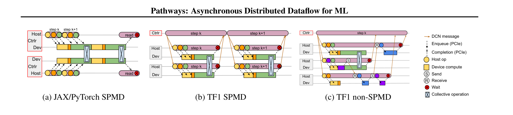
Figure 1: Dispatch overhead and communication in multi-controller and single-controller systems. JAX/PyTorch SPMD dispatches independently over PCIe; TensorFlow v1 requires DCN control messages, and non-SPMD execution adds explicit send/receive coordination.
图 1：多控制器与单控制器系统中的分派开销和通信模式。JAX/PyTorch SPMD 通过 PCIe 独立分派；TensorFlow v1 需要经 DCN 传递控制消息，非 SPMD 执行还需显式 send/receive 协调。
3 PATHWAYS Programming Model3 PATHWAYS 编程模型
ENPATHWAYS can be targeted from TensorFlow and JAX source programs; this paper's evaluation focuses on JAX. JAX users wrap ordinary Python fragments in decorators to mark them for compilation into potentially SPMD XLA computations. These computations usually have known input/output types and shapes, bounded loops, and few if any conditionals (Appendix B), making resource requirements predictable in advance. PATHWAYS calls such computations “compiled functions,” and maps each one to a single, possibly sharded, computation node in a program.
中PATHWAYS 支持从 TensorFlow 和 JAX 源程序调用，本文评估主要聚焦 JAX。JAX 用户可以用装饰器包裹普通 Python 代码片段，指出哪些片段应编译为可能采用 SPMD 的 XLA 计算。这些计算通常具有已知的输入／输出类型和形状、有界循环，并且几乎没有条件分支（详见附录 B），因此可以提前估算其资源需求。PATHWAYS 把这类资源需求已知的计算称为“编译函数”（compiled functions）；每个编译函数映射到 PATHWAYS 程序中的一个计算节点，而该节点本身可以被分片。
ENContemporary JAX cannot scale beyond one TPU pod because multi-controller JAX transfers all data through XLA collectives, which on TPU are available only over ICI. PATHWAYS can replace the JAX backend as a plug-in: JAX code remains unchanged, but SPMD computations can access every core provisioned in the system rather than only locally connected cores. Because PATHWAYS communicates over both ICI and DCN, it lets JAX programs span multiple TPU pods and many thousands of TPU cores.
中当时的 JAX 无法扩展到单个 TPU pod 之外，因为多控制器 JAX 的所有数据传输都使用 XLA 集合操作，而 TPU 上这些操作仅能通过 ICI 执行。PATHWAYS 可以作为 JAX 后端的插件式替代：JAX 代码无需修改，但 SPMD 计算不再只能访问本地互连的 TPU 核，而可以访问系统中分配的所有核心。由于 PATHWAYS 同时支持 ICI 和 DCN 通信，它首次让 JAX 程序能够扩展到多个 TPU pod、覆盖数千个 TPU 核。
ENRunning unmodified JAX is convenient but does not expose all of PATHWAYS's performance. Users may request sets of “virtual devices,” optionally constraining device type, location, or interconnect topology, and place specific compiled functions on them (Figure 2). PATHWAYS automatically moves data and reshards it between dependent computations.
中直接运行未修改的 JAX 代码很方便，但无法释放 PATHWAYS 的全部性能。用户可以请求一组“虚拟设备”，并可选择对设备类型、位置或互连拓扑施加约束；随后把特定编译函数放置到这些设备上（图 2）。系统会自动处理相互依赖计算之间的所有数据移动和重新分片。
ENBy default, each compiled function becomes a standalone PATHWAYS program containing one sharded computation. Running many functions back-to-back would therefore require a separate Python call and client-to-coordinator RPC for each. PATHWAYS also provides a program tracer that wraps a Python block containing many compiled-function calls and produces one program whose dataflow graph has one computation node per compiled function.
中默认情况下，每个编译函数会被转换为只包含一个分片计算的独立 PATHWAYS 程序。因此，若用户要连续运行许多函数，每个函数都需要一次单独的 Python 调用和一次从客户端到协调器的 RPC。为此，PATHWAYS 还实现了程序追踪器：用户可以用它包裹一段调用多个编译函数的 Python 代码，追踪器会生成一个 PATHWAYS 程序，其中每个编译函数都对应数据流图中的一个计算节点。
ENJAX's emphasis on transformations of traced code fits the research directions PATHWAYS aims to support. FLAX (Heek et al., 2020), for example, expresses layered neural networks, and the authors built a library that automatically converts a FLAX model into a pipelined PATHWAYS program. JAX also transforms per-example Python functions into vectorized, efficiently batched code, providing a basis for future data-dependent vectorized control flow (§6.3).
中JAX 支持对被追踪代码进行变换的理念，与 PATHWAYS 希望探索的研究方向非常契合。例如，JAX 的配套库 FLAX（Heek et al., 2020）用于表达分层深度神经网络，作者实现了一个库，可把 FLAX 模型自动转换为流水化 PATHWAYS 程序。JAX 还支持把“逐样本”Python 函数向量化，生成高效的批处理代码；这为探索新的数据依赖向量化控制流提供了良好基础（第 6.3 节）。
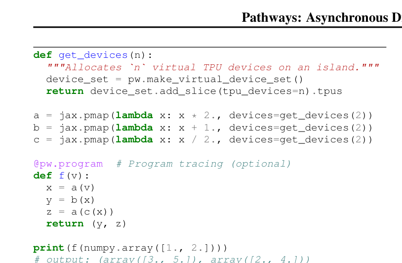
Figure 2: Python example in which PATHWAYS allocates virtual TPU devices, places JAX computations on them, traces multiple calls into one program, and runs sharded computations across accelerator islands.
图 2：Python 示例。PATHWAYS 分配虚拟 TPU 设备、放置 JAX 计算、把多次调用追踪为一个程序，并跨加速器岛执行分片计算。
4 PATHWAYS System Architecture4 PATHWAYS 系统架构
ENPATHWAYS builds on XLA (TensorFlow, 2019) for representing and executing TPU computations; TensorFlow graphs and executors (Abadi et al., 2016) for distributed CPU computation; and Python frameworks including JAX and TensorFlow APIs. Reusing these components lets the design focus on PATHWAYS's new coordination mechanisms while running existing models with minimal code changes.
中PATHWAYS 广泛建立在已有系统之上：使用 XLA（TensorFlow, 2019）表示和执行 TPU 计算；使用 TensorFlow 图与执行器（Abadi et al., 2016）表示和执行分布式 CPU 计算；编程层则复用 JAX 和 TensorFlow API 等 Python 框架。借助这些构件，PATHWAYS 可以把重点放在新的协调机制上，同时只需极少代码修改就能运行现有 ML 模型。
4.1 Resource Manager4.1 资源管理器
ENA PATHWAYS backend groups accelerators into tightly coupled islands, which are connected to one another over the DCN (Figure 3). A centralized resource manager controls devices across every island. Clients request “virtual slices” with 2D or 3D mesh shapes suited to their communication patterns. Each slice contains virtual devices through which clients describe computation placement. The resource manager dynamically maps virtual to physical devices while satisfying interconnect-topology, memory-capacity, and other constraints.
中PATHWAYS 后端把加速器组织成若干紧密耦合的岛，各岛再通过 DCN 相互连接（图 3）。一个集中式资源管理器负责管理所有岛上的设备。客户端可以请求具有特定二维或三维网格形状、适合其通信模式的“虚拟切片”。每个虚拟切片包含若干虚拟设备，客户端借此表达计算应如何放置到网格上。资源管理器动态把虚拟设备映射到物理设备，同时满足所需的互连拓扑、内存容量等约束。
ENThe initial implementation uses a simple heuristic: spread computations over available devices to statically balance load, with a one-to-one mapping between virtual and physical devices. Future workloads may justify a more sophisticated allocation algorithm that considers every client's resource requirements and current system state to approximate an optimal placement.
中初始资源管理器采用简单启发式算法：把计算分散到所有可用设备上以静态平衡负载，并保持虚拟设备与物理设备一一映射。若未来工作负载需要，可以采用更复杂的分配算法，例如综合考虑所有客户端计算的资源需求和系统当前状态，以近似求得物理设备到计算任务的最优分配。
ENBackend resources can be added or removed dynamically, with the resource manager tracking availability. The indirection between virtual and physical devices, enabled by the single-controller design, can later support transparent suspend/resume and migration: virtual devices may be temporarily reclaimed or reassigned without cooperation from the user program.
中后端计算资源可以动态增加或移除，资源管理器持续跟踪可用设备。单控制器设计提供的虚拟—物理设备间接层，未来还可支持透明暂停／恢复和迁移：系统能够临时回收或重新分配客户端的虚拟设备，而无需用户程序配合。
4.2 Client4.2 客户端
ENTo run a traced program, the PATHWAYS client assigns virtual devices to computations that have not run before and registers them with the resource manager, causing servers to compile them in the background. It then constructs a device-location-agnostic intermediate representation (IR) in a custom MLIR dialect (Lattner et al., 2021). Standard compiler passes progressively lower the IR into a form containing physical locations. The low-level program accounts for physical network connectivity and inserts operations that transfer outputs from source shards to destination shards, including scatter and gather when reshaping is needed. If virtual-device locations remain fixed, this low-level program can be executed repeatedly; if mappings change, it is lowered again.
中当用户运行一个已追踪程序时，PATHWAYS 客户端首先为此前尚未运行的计算分配虚拟设备，并把这些计算注册到资源管理器，从而触发服务器在后台编译。随后，客户端为程序构建与设备位置无关的 PATHWAYS 中间表示（IR），该表示采用自定义 MLIR 方言（Lattner et al., 2021）。IR 经过一系列标准编译器 pass 逐步“降低”，最终产生包含物理设备位置的低层表示。低层程序会考虑物理设备间的网络连通性，并在需要数据交换时插入操作，把源计算分片的输出传到目标分片所在位置，其中包括 scatter 和 gather。常见情况下，虚拟设备位置不变，低层程序可重复高效运行；若资源管理器改变虚拟—物理映射，则重新降低程序。
ENIn older single-controller systems, the client becomes a bottleneck when coordinating thousands of computation shards and their buffers. PATHWAYS represents a logical buffer that may be distributed across devices using a sharded-buffer abstraction. Bookkeeping—including reference counting—is then amortized at logical-buffer granularity instead of being repeated for every shard, allowing the client to scale.
中在旧式单控制器系统中，当客户端需要协调分布在数千个加速器上的数千个计算分片及其数据缓冲区时，很快会成为性能瓶颈。PATHWAYS 使用“分片缓冲区”抽象来表示可能分布在多个设备上的逻辑缓冲区。这样，引用计数等簿记工作可以按逻辑缓冲区而非单个分片的粒度摊销，从而提高客户端的可扩展性。
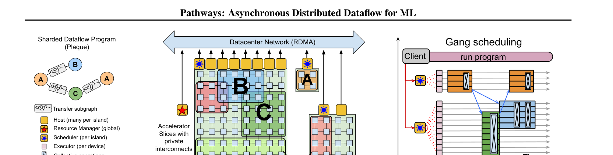
Figure 3: PATHWAYS architecture. A sharded dataflow DAG feeds a global resource manager, per-island schedulers, and per-device executors; virtual slices are placed on accelerator islands and communicating computations are gang-scheduled.
图 3：PATHWAYS 架构。分片数据流 DAG 连接全局资源管理器、每岛调度器和每设备执行器；虚拟切片被放置到加速器岛上，相互通信的计算通过成组方式调度。
4.3 Coordination implementation4.3 协调机制实现
ENPATHWAYS uses PLAQUE for all cross-host coordination over the DCN. PLAQUE is an existing closed-source production sharded-dataflow system used at Google for customer-facing services that require high fan-out or fan-in, scalability, and low latency. The low-level PATHWAYS IR is translated directly into a PLAQUE dataflow graph. PLAQUE satisfies several stringent requirements imposed by PATHWAYS.
中PATHWAYS 使用 PLAQUE 处理所有经由 DCN 的跨主机协调。PLAQUE 是 Google 已有的闭源生产级分片数据流系统，被用于需要高扇出或高扇入、同时重视可扩展性和延迟的面向客户服务。PATHWAYS 的低层 IR 被直接转换为 PLAQUE 数据流图。PATHWAYS 对协调底座提出了严格要求，而 PLAQUE 能够满足这些要求。
ENFirst, each sharded computation must appear as one node so that representations stay compact regardless of shard count. A chain of computations A and B with N shards each therefore needs only four nodes—Arg → Compute(A) → Compute(B) → Result—not a graph whose size grows with N. At runtime, each PLAQUE node emits output tuples tagged with destination shards; under data parallelism, N tuples flow between each adjacent pair of IR nodes.
中第一，每个分片计算在表示中必须只占一个节点，使计算图规模不随分片数量膨胀。例如，计算 A、B 各有 N 个分片且顺序执行时，数据流表示无论 N 为多少都只需四个节点：Arg → Compute(A) → Compute(B) → Result。在 PLAQUE 运行时中，每个节点会产生带有目标分片标签的输出数据元组；执行 N 路数据并行时，每对相邻 IR 节点之间流过 N 个数据元组。
ENSecond, the runtime must support sparse exchanges along sharded edges, sending messages among dynamically chosen subsets of shards and using progress-tracking mechanisms (Akidau et al., 2013; Murray et al., 2013) to determine when a shard has received all messages. Efficient sparse communication prevents the DCN from bottlenecking data-dependent accelerator control flow, one of PATHWAYS's intended capabilities.
中第二，协调运行时必须支持沿分片边进行稀疏数据交换：消息可以在动态选择的分片子集之间发送，并使用标准进度跟踪机制（Akidau et al., 2013；Murray et al., 2013）判断某个分片是否已收到全部消息。高效稀疏通信是必要的，否则数据依赖的加速器控制流会使 DCN 成为瓶颈；而支持这类控制流正是 PATHWAYS 的关键目标之一。
ENThird, scheduling messages and data handles travel over the DCN on the critical path (Figure 4). The coordination substrate must therefore send critical messages at low latency and batch messages to the same host when throughput matters.
中第三，调度消息和数据句柄通过 DCN 传输，并处于关键路径上（图 4）。因此，协调底座必须以低延迟发送关键消息；在吞吐量更重要时，还应把发往同一主机的消息批量发送。
ENA general extensible dataflow engine is also convenient for background work: distributing configuration, monitoring and cleaning up programs, and reporting failures.
中使用可扩展的通用数据流引擎处理 DCN 通信，也便于执行后台维护任务，例如分发配置信息、监控与清理程序，以及在发生故障时传递错误。
ENThe authors argue that the full design could be reimplemented over another distributed framework such as Ray (Moritz et al., 2018). Long-running Ray actors could replace PATHWAYS executors and schedulers, implementing PATHWAYS scheduling above Ray's cluster scheduler, while executors used PyTorch for GPU computation and collectives. Comparable performance would require additions—Ray lacks an HBM object store and primitives for efficiently moving remote objects over GPU interconnects, for example.
中作者认为，也可以不用 PLAQUE，而在 Ray（Moritz et al., 2018）等其他分布式框架上重新实现完整 PATHWAYS 设计。长时间运行的 Ray actor 可以取代 PATHWAYS 执行器和调度器，在 Ray 集群调度之上实现 PATHWAYS 的调度；执行器则可使用 PyTorch 完成 GPU 计算和集合通信。不过，要达到相当性能仍需补充一些能力，例如 Ray 缺少 HBM 对象存储，也缺少通过 GPU 互连高效传输远程对象的原语。
4.4 Gang-scheduled dynamic dispatch4.4 成组调度的动态分派
ENEfficient gang scheduling is required to run SPMD computations on a shared accelerator pool. PATHWAYS has one centralized scheduler per island, which consistently orders every computation on that island. As a program is enqueued, its PLAQUE dataflow program (i) enqueues local compiled functions on each accelerator, using buffer futures as inputs; (ii) enqueues network sends for buffer futures produced by functions and consumed on remote accelerators; and (iii) communicates with the scheduler to determine one consistent execution order across every program on the island. The scheduler allocates accelerators at millisecond timescales. The current policy is FIFO, though future schedulers could reorder computations using estimated execution times.
中为了在共享加速器池上运行 SPMD 计算，系统必须支持高效成组调度。PATHWAYS 在每个岛上设置一个集中式调度器，以一致顺序安排该岛上的所有计算。当一个程序被入队执行时，其 PLAQUE 数据流程序负责三项工作：(i) 在每个加速器上把本地编译函数入队，并以缓冲区 future 作为输入；(ii) 对函数执行产生、但要由远程加速器消费的缓冲区 future，把网络发送操作入队；(iii) 与调度器通信，为该岛上运行的所有程序确定一致的函数执行顺序。调度器必须在毫秒时间尺度上分配加速器。当前实现简单地按 FIFO 顺序入队；更复杂的调度器则可以根据估计执行时间重新排序计算。
4.5 Parallel asynchronous dispatch4.5 并行异步分派
ENAccelerator systems use asynchronous APIs to overlap computation and coordination (Kwon et al., 2020). Consider the three-node graph in Figure 4(a), where A, B and C are regular compiled functions on accelerators attached to three hosts. Host A enqueues A, receives a future for its output, and sends that future to host B. Host B allocates input storage, sends its buffer addresses to host A, and performs most preparation for launching B. When A completes, the accelerator interconnect moves its output directly into B's input buffers, after which host B starts B. The gap between predecessor completion and successor start can be reduced to little more than transfer time.
中加速器系统可以利用异步 API 让计算与协调重叠（Kwon et al., 2020）。考虑图 4(a) 的三节点图：A、B、C 都是规则编译函数，分别运行在连接到三台主机的加速器上。主机 A 把节点 A 入队，获得表示 A 输出的 future，再把该 future 发送给主机 B。主机 B 为 B 的输入分配存储空间，把输入缓冲区地址发给主机 A，并完成启动 B 所需的大部分准备工作。A 完成后，其输出经加速器互连直接传入 B 的输入缓冲区，随后主机 B 启动 B。这样，前驱节点结束到后继节点开始之间的延迟，可以被压缩到略高于数据传输时间。
ENThis works when a predecessor runs longer than scheduling, resource allocation and host coordination. If computation is shorter, as in the figure, host-side work stalls the asynchronous pipeline and becomes the critical bottleneck. Because these compiled functions are regular, however, a successor's input shapes can be known before its predecessor has even been enqueued.
中当前驱节点的计算时间长于调度、资源分配和主机间协调时间时，上述设计效果很好。但如果计算过短——如图中情况——异步流水线会因主机端工作而停顿，主机端工作转而成为整条计算序列的关键瓶颈。由于这些编译函数是规则的，实际上可以在前驱计算尚未入队前就确定后继节点的输入形状。
ENPATHWAYS therefore introduces parallel asynchronous dispatch (Figure 4b). It exploits statically known resource use to perform most host-side work for multiple nodes in parallel instead of waiting for each predecessor to be enqueued. Parallel scheduling is only an optimization for regular functions; when a node's requirements depend on predecessor results—for example under data-dependent control flow—the runtime falls back to traditional sequential scheduling.
中因此，PATHWAYS 引入了图 4(b) 所示的并行异步分派。它利用规则编译函数的资源需求可静态获知这一性质，并行完成多个节点的大部分主机端工作，而不是等每个前驱节点入队后才顺序处理后继节点。只有规则函数才能并行调度，所以 PATHWAYS 把它视为一种优化；若某节点的资源需求必须等前驱计算完成后才能确定——例如存在数据依赖控制流——运行时就退回传统顺序调度。
ENWhen a subgraph is statically schedulable, the program sends the scheduler one message describing the entire subgraph. The scheduler can then sequence all active shards back-to-back. One message minimizes network traffic but does not force those shards to execute as an indivisible batch: work from other concurrent programs may still be interleaved. Section 5 measures the dispatch alternatives.
中当某个计算子图能够静态调度时，程序只向调度器发送一条描述整个子图的消息。调度器随后可以把子图中的所有活动分片连续排序执行。单条消息旨在减少网络流量，但并不要求调度器把所有分片作为不可分割的一批同时入队；其他并发程序提交的计算仍可穿插其中。第 5 节将评估不同分派机制的成本。
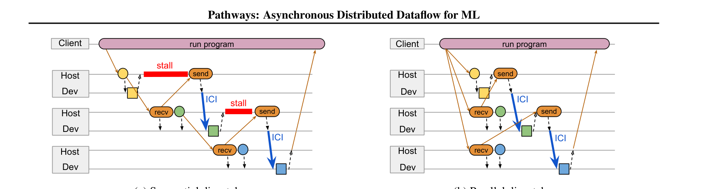
Figure 4: Sequential versus parallel asynchronous dispatch for a three-node program. Parallel dispatch performs known host-side preparation concurrently and removes stalls when device computations are short.
图 4：三节点程序的顺序与并行异步分派。并行分派可同时执行提前已知的主机端准备工作，避免设备计算很短时出现流水停顿。
4.6 Data management4.6 数据管理
ENEvery host manages a sharded object store similar to Ray's (Moritz et al., 2018), extended to track buffers held in accelerator HBM at each shard. Clients and servers refer to remote-host or accelerator-memory objects using opaque handles, allowing migration. Intermediate values remain in object stores while awaiting transfers or later computations. Ownership labels permit garbage collection after client or program failure. Simple backpressure can stall a computation when memory allocation fails because other programs' buffers temporarily occupy HBM.
中每台主机管理一个与 Ray 对象存储（Moritz et al., 2018）类似的分片对象存储，但它还扩展为跟踪每个分片上位于加速器 HBM 中的缓冲区。客户端和服务器用不透明句柄引用远程主机内存或加速器内存中的对象，从而允许系统在必要时迁移对象。中间程序值也保存在对象存储中，例如等待在加速器间传输，或等待传给后续计算。对象带有所有权标签，因此当程序或客户端失败时可以被垃圾回收。如果其他计算的缓冲区暂时占用 HBM，导致当前计算无法分配内存，系统可使用简单背压让该计算暂停。
5 Evaluation5 评估
ENJAX, PATHWAYS and TensorFlow are evaluated on three TPU configurations. Configuration A has four TPUs per host and scales to 512 hosts, for 2048 TPUs connected over ICI. Configuration B has eight TPUs per host and scales to 64 hosts, totaling 512 TPUs. Configuration C contains four TPU islands, each with four hosts and 32 TPUs. Experiments using only a subset are identified in the text.
中对 JAX、PATHWAYS 和 TensorFlow 的 TPU 评估采用三种硬件配置。配置 A 每台主机有 4 个 TPU，最大实例含 512 台主机，总计 2048 个通过 ICI 连接的 TPU。配置 B 每台主机有 8 个 TPU，最大实例含 64 台主机，共 512 个 TPU。配置 C 使用 4 个 TPU 岛，每个岛包含 4 台主机和 32 个 TPU。若实验只使用某一配置的部分 TPU，正文会明确说明。
ENRay evaluation uses Ray 1.3 and PyTorch 1.8.1 on p3.2xlarge VMs, each with one V100 GPU and eight CPU cores; hosts communicate through the DCN and use Amazon placement groups. The main comparison is with multi-controller JAX, which has state-of-the-art benchmark performance and can run on hardware identical to PATHWAYS. TensorFlow and Ray appear in microbenchmarks to isolate distributed-system behavior, and a TensorFlow model is used to test pipelining on PATHWAYS.
中Ray 评估使用 Ray 1.3 和 PyTorch 1.8.1，运行在 p3.2xlarge 虚拟机上；每台虚拟机有 1 个 V100 GPU 和 8 个 CPU 核，主机经 DCN 连接，并由 Amazon placement group 调度。主要比较对象是多控制器 JAX，因为它在行业标准基准中表现先进，而且可以与 PATHWAYS 运行在相同硬件配置上。微基准还比较 TensorFlow 和 Ray，以考察 PATHWAYS 分布式系统性能的具体方面；另有一个 TensorFlow 模型用于展示 PATHWAYS 上的流水化性能。
5.1 Single-controller dispatch overheads5.1 单控制器分派开销
ENThe first microbenchmark repeatedly executes a trivial gang-scheduled operation: scalar AllReduce followed by scalar addition, feeding each result into the next computation. Throughput is the number of computations executed per second. User code enqueues work in three forms:
中第一个微基准用于比较 JAX 多控制器与单控制器框架的开销。程序反复执行一个简单的成组调度计算：先对标量执行一次 AllReduce，再做一次标量加法，并把一个计算的输出传给下一个计算。吞吐量定义为加速器每秒执行的计算次数。用户代码以三种方式入队：
- OpByOp (-O): one user call for every execution.
- Chained (-C): each user call submits a chain of 128 computation nodes; the system executes the full chain in response to that one call.
- Fused (-F): each user call submits one computation node that internally contains a loop or fused chain of 128 computations.
- 逐操作（OpByOp，-O）： 每执行一次计算，用户代码都进行一次独立调用。
- 链式（Chained，-C）： 每次用户调用提交一条由 128 个计算节点组成的链，系统用一次客户端调用执行完整链条。
- 融合（Fused，-F）： 每次用户调用只提交一个计算节点，但该节点内部包含 128 次计算组成的循环或融合链。
ENFor multi-controller JAX, OpByOp JIT-compiles one computation and repeatedly calls it from Python, while Fused JIT-compiles a whole chain; there is no Chained analogue. PATHWAYS OpByOp and Fused use the same JAX source, while Chained uses the program tracer to build a multi-node graph. TensorFlow constructs the same TPU computations in TF graphs. In Ray, OpByOp executes one actor method per PyTorch AllReduce; Chained passes futures among a sequence of actor calls; Fused executes a loop of AllReduce operations inside one actor method.
中对于多控制器 JAX，OpByOp 表示把包含一次计算的函数 JIT 编译，然后从 Python 中反复调用；Fused 则把包含一整条计算链的函数 JIT 编译。多控制器没有与 Chained 对应的模式。PATHWAYS 的 OpByOp 和 Fused 使用与多控制器相同的 JAX 源码，Chained 则使用程序追踪器构建多节点图。TensorFlow 构造同样的 TPU 计算，但通过 TF 图执行。对于 Ray，OpByOp 表示每次计算执行一个 actor 方法，该方法完成一次 PyTorch AllReduce；Chained 通过传递 Ray future 串联多个 actor 方法；Fused 则在一个 actor 方法内部循环执行一条 PyTorch AllReduce 链。
ENOpByOp is deliberately a worst case rather than an idiomatic use of any framework. JAX multi-controller performs much better than single-controller systems as accelerator count grows. Most PATHWAYS overhead comes from waiting for the coordinator to enqueue one computation and return output handles before the client submits the next. This could be reduced by overlapping user execution with enqueue RPCs and opportunistically batching small computations. The authors did not optimize this extreme case because realistic model computations already hide the overhead.
中OpByOp 是刻意构造的最坏情况，并不是任何框架的惯常用法。正如预期，随着加速器数量增加，多控制器 JAX 的 OpByOp 吞吐量远高于单控制器系统。PATHWAYS 的大部分开销来自客户端必须等待协调器把一次计算入队并返回输出句柄，之后才能提交下一次计算。可以通过让用户代码与入队 RPC 并行推进，以及把多个小计算机会式合并成一个 PATHWAYS 程序，消除大部分开销。作者没有重点优化极小计算，因为在真实模型中，计算规模通常已足以掩盖单控制器开销。
ENWhen enough work is fused into one node, PATHWAYS matches JAX through 1000 TPU cores. PATHWAYS Chained also beats JAX OpByOp through 256 cores because PATHWAYS executes consecutive accelerator computations directly from C++, whereas JAX returns to Python for every operation.
中当单个节点中融合了足够多的工作时，PATHWAYS 在多达 1000 个 TPU 核上都能匹配 JAX 的性能。PATHWAYS Chained 在多达 256 个核心上还优于 JAX OpByOp，因为 PATHWAYS 可直接从 C++ 连续执行加速器计算，而 JAX OpByOp 每次计算都要返回 Python。
ENTensorFlow and Ray lack a device object store. Ray copies results from GPU to DRAM before returning a handle, while TensorFlow returns data to the client. This harms OpByOp but is largely amortized under Chained and Fused. Hardware differs, so Ray and PATHWAYS are not directly comparable; nevertheless the authors infer that a Ray-based PATHWAYS implementation could approach the same performance with careful engineering. Out-of-the-box Ray is about an order of magnitude slower per computation because it supports general Python actors, whereas PATHWAYS specializes in C++-launched TPU computations. Fast paths such as an on-GPU object store and efficient GPU-interconnect object transfer could remove much of the gap.
中TensorFlow 和 Ray 都缺少设备对象存储。Ray 必须先把计算结果从 GPU 传到 DRAM，才能把对象句柄返回客户端；TensorFlow 则把数据本身传回客户端。这些开销会严重影响 OpByOp，但在 Chained 和 Fused 中大体可以摊薄。由于硬件不同，Ray 和 PATHWAYS 不能直接比较；不过作者据此推断，若用 Ray 代替 PLAQUE 实现完整 PATHWAYS 设计，通过细致工程优化应能达到相近性能。开箱即用的 Ray 每次计算大约慢一个数量级，这并不意外：Ray 支持通用 Python actor，而 PATHWAYS 针对从 C++ 启动的 TPU 计算特化。若为 Ray 增加 GPU 上对象存储和通过 GPU 互连高效传输对象等快速路径，可能消除大部分额外开销。
ENTensorFlow is slow at large core counts because a centralized barrier, encoded with control edges, serializes gang-scheduled computations.
中TensorFlow 在大量核心上运行较慢，是因为它用控制边实现集中式屏障，从而把本应成组调度的计算串行化。
ENFigure 6 increases the duration of each computation to find when PATHWAYS matches JAX. On 16 hosts and 128 TPUs in configuration B, 2.3 ms per computation is enough. Even on 512 hosts and 2048 TPUs in configuration A, a 35 ms computation hides all single-controller overhead.
中图 6 改变每次计算的持续时间，以确定 PATHWAYS 何时能够匹配 JAX 吞吐量。对于配置 B 的 16 台主机、128 个 TPU，每次计算只需达到 2.3 ms，两者即可持平；即使在配置 A 的 512 台主机、2048 个 TPU 上，每次计算达到 35 ms 也足以掩盖全部单控制器开销。
ENA second benchmark evaluates parallel asynchronous dispatch using a more realistic pipeline. Each chained computation runs on a different set of four TPU cores on a different host, and output must cross ICI before the next stage begins. Figure 7 shows three phases: increasing host count first amortizes fixed client overhead; then additional-stage transfer cost dominates; finally fixed scheduling overhead is amortized. Transfer would eventually dominate again. Sequential asynchronous dispatch is also measured by forcing the runtime to wait until one computation is enqueued before enqueueing its successor.
中第二个微基准在配置 B 上用更现实的流水线评估并行异步分派。此前的简单计算仍被串联，但每个计算运行在另一台主机上的一组 4 个 TPU 核上；一个阶段的输出必须经 ICI 发送后，下一个阶段才能执行。图 7 显示三个阶段：最初，随着主机数增加，固定客户端开销被摊薄；随后，增加更多流水阶段带来的传输成本开始占主导；最后，系统又开始摊薄固定调度开销。若继续增加阶段，预计传输开销最终会再次主导。为衡量并行异步分派的收益，实验还强制 PATHWAYS 使用顺序异步分派——等待一个计算入队后才把下一个计算入队——并报告其性能。
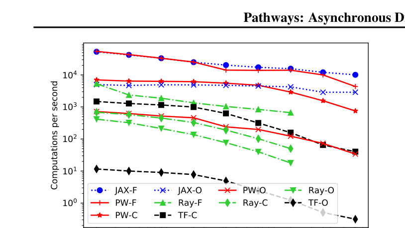
Figure 5: Dispatch throughput of PATHWAYS, JAX, TensorFlow and Ray as host count grows. Fused and chained PATHWAYS configurations approach multi-controller JAX and exceed the other single-controller systems.
图 5：随着主机数增加，PATHWAYS、JAX、TensorFlow 和 Ray 的分派吞吐量。PATHWAYS 的融合与链式配置接近多控制器 JAX，并优于其他单控制器系统。
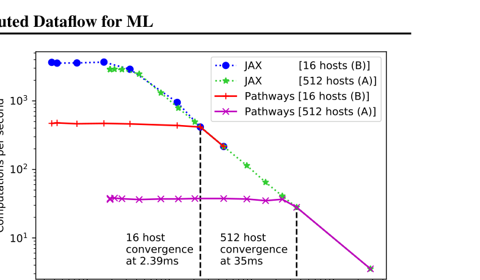
Figure 6: Minimum computation duration needed for PATHWAYS to match JAX throughput. The crossover is about 2.3 ms at 128 TPUs and 35 ms at 2048 TPUs.
图 6：PATHWAYS 匹配 JAX 吞吐量所需的最小单次计算时间。在 128 个 TPU 上约为 2.3 ms，在 2048 个 TPU 上约为 35 ms。
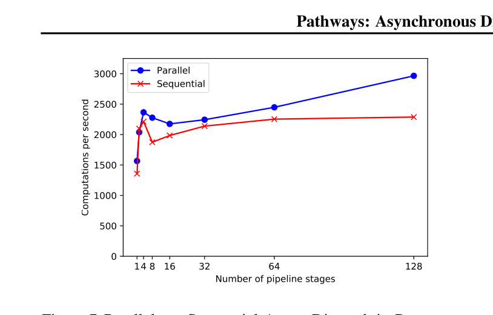
Figure 7: Parallel versus sequential asynchronous dispatch as pipeline depth grows. Parallel dispatch amortizes client and scheduler overhead across many stages.
图 7：随着流水阶段数增加，并行与顺序异步分派的比较。并行分派可在许多阶段之间摊薄客户端和调度器开销。
5.2 Multi-tenancy5.2 多租户
ENFigure 8 shows that PATHWAYS time-multiplexes accelerators among concurrent programs. When multiple clients submit distinct programs, aggregate throughput is at least as high as JAX: switching between clients adds no measurable overhead as long as their resources fit concurrently in HBM. Larger computations need less concurrency to saturate the TPU. For very small computations, PATHWAYS even exceeds JAX because a worker can accept more work from remote clients than local Python can dispatch.
中图 8 验证 PATHWAYS 能够在并发程序之间按时间复用加速器。当多个客户端同时提交不同程序时，只要这些程序的资源能同时装入 HBM，聚合吞吐量至少与 JAX 相同，也就是说，在不同客户端程序之间切换没有可测开销。单次计算越大，TPU 越容易达到满利用率，因此匹配吞吐量所需的并发度越低。对于很小的计算，PATHWAYS 的最大吞吐量甚至超过 JAX，因为 PATHWAYS 工作节点能够从远程客户端接收的计算数量，多于 JAX 通过本地 Python 能够分派的数量。
ENFigure 9 traces 128 cores while four independent clients run. PATHWAYS gang-schedules their programs while controlling accelerator-time allocation for fairness; the scheduler can, for example, enforce proportional-share ratios in the multi-tenant setting.
中图 9 给出了上述工作负载在 PATHWAYS 的 128 个核心上的执行轨迹。实验显示，PATHWAYS 对四个独立客户端提交的程序进行成组调度，同时为了公平性控制加速器时间的分配；例如，调度器可以在多租户环境中强制执行比例份额。
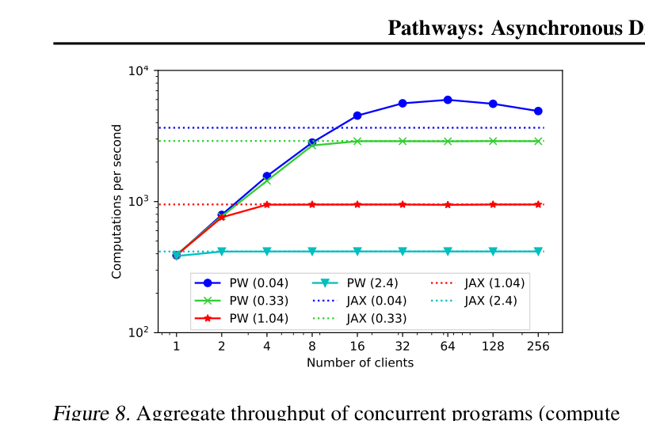
Figure 8: Aggregate throughput of concurrent programs versus number of clients. PATHWAYS efficiently multiplexes accelerators and shows negligible context-switch overhead.
图 8：并发程序的聚合吞吐量随客户端数量变化。PATHWAYS 能够高效复用加速器，程序切换开销几乎可以忽略。
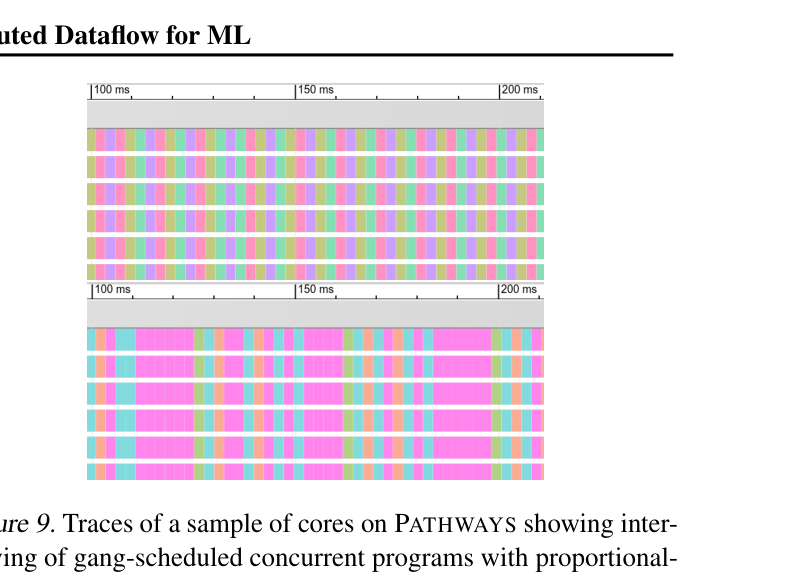
Figure 9: Core traces for four clients under equal 1:1:1:1 and weighted 1:2:4:8 proportional shares.
图 9：四个客户端在 1:1:1:1 等额份额和 1:2:4:8 加权比例份额下的核心执行轨迹。
5.3 Large-scale model performance5.3 大规模模型性能
ENThe final experiments train real models expressible as SPMD programs. JAX and TensorFlow models running on their native systems produce numerically identical results to the same models on PATHWAYS, so the evaluation focuses on performance.
中最后一组实验使用能够表达为 SPMD 程序的真实机器学习模型进行训练。作者验证了，在原生系统上运行的 JAX 和 TensorFlow 模型，与在 PATHWAYS 上运行的相同模型得到完全一致的数值结果，因此评估只聚焦性能。
ENThe first comparison uses multi-controller JAX and encoder–decoder Transformer configurations from Raffel et al. (2019) for text-to-text tasks, running on TPU v3 accelerators with 16 GB each. Table 1 reports training throughput up to 11B parameters and 512 accelerators. Because the model code is identical, both systems reach the same perplexity in the same number of steps. Their throughput is also identical across every tested size because realistic computations are large enough to hide single-controller overhead; extensive additional experience with JAX models on PATHWAYS supports the same conclusion.
中第一项比较使用多控制器 JAX，以及 Raffel et al.（2019）面向文本到文本任务的编码器—解码器 Transformer 配置；实验运行在每个具有 16 GB 内存的 TPU v3 上。表 1 报告了从 2.7 亿到 110 亿参数、最多 512 个加速器的训练吞吐量。由于模型代码相同，两套系统用同样步数达到相同困惑度。所有测试规模上的吞吐量也完全相同，因为真实计算足够大，可以掩盖单控制器开销。作者在 PATHWAYS 上运行大量其他 JAX 模型的经验也支持这一结论。
| Model / 模型 | Parameters / 参数 | TPU cores / TPU 核 | JAX tokens/s | PATHWAYS tokens/s |
|---|---|---|---|---|
| T5-Base | 270M | 32 | 618k | 618k |
| T5-Large | 770M | 32 | 90.4k | 90.4k |
| T5-3B | 3B | 512 | 282.8k | 282.8k |
| T5-11B | 11B | 512 | 84.8k | 84.8k |
Table 1: Text-to-text Transformer training throughput on multi-controller JAX and PATHWAYS.
表 1：文本到文本 Transformer 在多控制器 JAX 与 PATHWAYS 上的训练吞吐量。
ENNext, PATHWAYS trains a 3B decoder-only language model written in TensorFlow on configurations B and C. The model has 62 Transformer layers, model dimension 2048 and hidden dimension 8192. An SPMD configuration is compared with a GPipe-like pipeline schedule (Huang et al., 2019). The pipeline splits the model into balanced stages on distinct multi-host accelerator sets. To offset the embedding lookup in the first stage and softmax in the last, one Transformer layer is removed from each of those stages.
中接下来，PATHWAYS 在配置 B 和 C 上训练一个用 TensorFlow Python 表达的 30 亿参数仅解码器语言模型。模型包含 62 个 Transformer 层，模型维度为 2048，隐藏维度为 8192。实验把 SPMD 配置与类似 GPipe 的流水调度（Huang et al., 2019）进行比较。流水模型被拆成多个计算量均衡的阶段，每个阶段放置在跨多台主机的一组不同加速器上。由于第一阶段额外包含嵌入查找层，最后阶段额外包含 softmax 层，作者分别从首尾阶段移除一个 Transformer 层，以平衡各阶段计算量。
ENTable 2 varies pipeline stages S and microbatches M while keeping global batch size and hyperparameters fixed. Every microbatch contains four examples, yielding a global batch of 2048 for 128-core runs and 8192 for the 512-core run. Unlike Megatron, the SPMD-sharded baseline resembles GShard and has no communication proportional to batch size, so comparing pipeline and SPMD at the same batch size is fair.
中表 2 在保持全局批量和训练超参数不变的情况下，改变流水阶段数 S 和微批次数 M。所有配置中的每个微批都固定包含 4 个样本，因此 128 核配置每步的全局批量为 2048，512 核配置为 8192。与 Megatron 不同，这里的 SPMD 分片模型更接近 GShard，其通信量不与批量大小成正比，因此用相同批量比较流水并行与 SPMD 是公平的。
| Model configuration / 模型配置 | TPU cores / TPU 核 | PATHWAYS tokens/s |
|---|---|---|
| Model-parallel (SPMD) / 模型并行 | 128 | 125.7k |
| Pipeline, S=4, M=16 / 流水 | 128 | 133.7k |
| Pipeline, S=8, M=32 / 流水 | 128 | 132.7k |
| Pipeline, S=16, M=64 / 流水 | 128 | 131.4k |
| Pipeline, S=16, M=64 / 流水 | 512 | 507.8k |
Table 2: Training throughput for the 3B Transformer under SPMD and pipeline configurations. S is stage count and M is microbatch count.
表 2：30 亿参数 Transformer 在 SPMD 与流水配置下的训练吞吐量。S 为阶段数，M 为微批次数。
ENTraining throughput grows in proportion to TPU cores per pipeline stage, consistent with prior systems and with the linear host scaling in Figure 5. Adding stages introduces little overhead: throughput falls only from 133.7k to 131.4k tokens/s when stages rise from 4 to 16. In this case pipeline performance is competitive with SPMD because SPMD collective-communication overhead exceeds pipeline-bubble overhead.
中训练吞吐量随每个流水阶段的 TPU 核数成比例增长，与已有系统的结果以及图 5 中 PATHWAYS 随主机数线性扩展的现象一致。增加流水阶段只引入很小开销：阶段数从 4 增至 16 时，吞吐量仅从 133.7k 降到 131.4k token/s。在该实例中，流水并行性能可与 SPMD 竞争，因为 SPMD 计算内的集合通信开销高于流水“气泡”开销。
ENPATHWAYS also trains efficiently across TPU islands connected by DCN. For S=16, M=64 and 128 cores, throughput is exactly 131.4k tokens/s both on one 128-core island in configuration B and on four 32-core islands in configuration C. Figure 10 shows that DCN transfers between islands are hidden by computation.
中PATHWAYS 也能在通过 DCN 连接的多个 TPU 岛上高效训练模型。对于 S=16、M=64、128 核的配置，在配置 B 的单个 128 核岛上，或配置 C 的四个 32 核岛上，吞吐量都同为 131.4k token/s。图 10 的执行轨迹显示，岛间 DCN 传输有效地与计算重叠，因此几乎不可见。
ENFinally, decoder-only models with 64B and 136B parameters are trained across two accelerator islands. Compared with one island containing twice as many devices, two DCN-connected islands retain about 97% throughput. The 136B and 64B models use two islands of 1024 and 512 cores respectively. Each global reduction performs a fast within-island ICI reduction followed by a 1030 GB or 457 GB cross-island DCN transfer.
中最后，作者把仅解码器 Transformer 扩展到 640 亿和 1360 亿参数，并使用两个加速器岛训练。与包含两倍设备的单个岛相比，通过 DCN 连接的两个岛仍能达到约 97% 的吞吐量。136B 和 64B 模型分别使用两个各含 1024 核和 512 核的岛。每次全局归约先在岛内通过高速 ICI 完成归约，再经 DCN 跨岛传输 1030 GB 或 457 GB 数据。
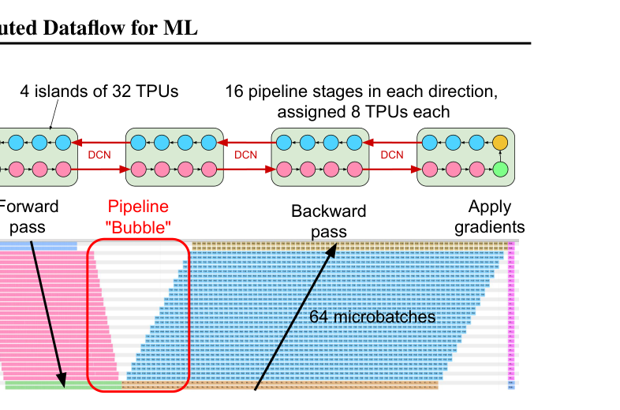
Figure 10: A 3B Transformer pipelined over four islands of 32 TPUs. Inter-island DCN transfers overlap with computation, preserving the 131.4k token/s throughput of a single 128-core island.
图 10：30 亿参数 Transformer 跨四个 32-TPU 岛进行流水训练。岛间 DCN 传输与计算重叠，保持了单个 128 核岛同样的 131.4k token/s 吞吐量。
6 Discussion6 讨论
6.1 PATHWAYS design versus implementation6.1 PATHWAYS 的设计与实现
ENPATHWAYS targets large TPU collections, so TPU rather than GPU properties influence many low-level decisions. A TPU can fuse longer and more complex computations into one kernel because it supports rich control flow and communication primitives that GPU systems often execute through driver code. GPUs, in contrast, integrate more tightly with host memory and data-center networks (Appendix A.5). XLA can compile high-performance TPU functions containing fused collectives, and large islands of high-speed TPU interconnects permit flexible scheduling of computations of many sizes. Nevertheless, the authors believe most high-level PATHWAYS architectural choices also apply to large GPU systems.
中PATHWAYS 的设计目标是大规模 TPU 集合，因此许多底层决策受到 TPU 而非 GPU 特性的影响。TPU 支持丰富的控制流和通信原语，可以把运行时间更长、结构更复杂的计算融合为单个 TPU 内核；在 GPU 系统中，这些操作往往需要由驱动代码执行。相对而言，GPU 与主机内存系统和数据中心网络结合得更紧密（详见附录 A.5）。XLA 能够编译包含融合集合操作的高性能 TPU 函数，而由高速 TPU 互连构成的大型加速器岛，也允许灵活调度不同规模的计算。尽管如此，作者认为本文所述 PATHWAYS 大多数高层架构选择同样适用于大规模 GPU 系统。
6.2 Resource management6.2 资源管理
ENPATHWAYS is designed for many fine-grained dynamic resource-management policies. Initial work focuses on efficient dynamic time multiplexing of TPU computations. More complex multi-tenancy will require managing heterogeneous resources including device and host memory, ICI, DCN and PCIe bandwidth.
中PATHWAYS 被设计为支持多种细粒度动态资源管理策略。初期研究聚焦于对 TPU 计算进行高效的动态时间复用。未来更复杂的多租户场景将要求系统管理更丰富的资源类型，包括但不限于设备内存、主机内存，以及 ICI、DCN 和 PCIe 带宽。
ENThe single controller can track available resources and allocate them at large scale. Future work will explore priorities, performance isolation, access control and resource accounting at much finer timescales than prior work and over pools orders of magnitude larger—for example thousands of cores and terabytes of accelerator memory.
中单控制器模型使系统能够全面跟踪可用资源，并在大规模范围内进行分配。作者计划探索多租户环境中的优先级、性能隔离、访问控制和资源计量等常见需求；与已有工作相比，目标时间尺度显著更小，资源池规模则大几个数量级，例如数千个核心和数 TB 加速器内存。
6.3 Data-dependent vectorized control flow6.3 数据依赖的向量化控制流
ENAlmost every current ML model updates every weight from every training example at every step. PATHWAYS aims to support fine-grained control flow in which different weights update for each example—or even each subexample such as an image patch or sentence word. Mixture-of-Experts models (Shazeer et al., 2017) and routed capsule networks (Hinton et al., 2018; Barham and Isard, 2019) exploit sparsity by routing different examples or subexamples, through learned functions that evolve during training, to accelerators holding different weight subsets. This requires fine-grained, data-dependent exchanges among nodes.
中当前几乎所有 ML 模型都会在每一步中，用每个训练样本更新所有模型权重。PATHWAYS 希望支持细粒度控制流，使每个样本甚至每个子样本——例如图像的一个 patch 或句子中的一个词——只更新不同的权重子集。混合专家模型（Shazeer et al., 2017）和路由胶囊网络（Hinton et al., 2018；Barham and Isard, 2019）通过“路由”利用计算稀疏性：随着训练进行而更新的学习函数，会把不同样本或子样本发送到保存不同权重子集的加速器。这要求节点之间进行细粒度、数据依赖的数据交换。
ENResearchers want to use sparsity more effectively as models and task counts grow, but current frameworks make new architectures difficult to explore. Supporting data-dependent vectorized control flow through a clean programming model and high performance remains future work.
中随着模型越来越大、任务越来越多，研究人员希望更有效地利用稀疏性，但当前框架限制了他们试验新模型架构的能力。如何以清晰的编程模型和良好性能支持数据依赖的向量化控制流，是未来工作。
ENSection 2 covered the closest systems. This section discusses research on workloads needing capabilities beyond SPMD multi-controllers and provides further support for PATHWAYS's design choices.
中第 2 节已详细讨论最相关的系统。本节扩展到其他需要超出 SPMD 多控制器能力的 ML 工作负载，并进一步说明 PATHWAYS 设计选择的合理性。
ENSharing accelerators among tasks is essential for utilization, but conventional sharing is coarse-grained. General-purpose virtualization lets cloud applications share multi-tenant resources with isolation, yet cloud providers still dedicate accelerators to individual users. Cluster schedulers account for heterogeneous ML workloads and multi-job fairness, but commonly give one job exclusive resources for seconds or longer.
中要获得高资源利用率，在多个任务之间共享加速器至关重要，但传统资源共享通常粒度很粗。通用虚拟化能够让云应用在性能隔离下共享多租户资源，但云提供商仍经常把加速器专门分配给单个用户。集群调度器会考虑 ML 工作负载异构性，以及多作业、多用户的公平性与性能；不过资源仍往往在数秒甚至更长时间尺度上由单个作业独占。
ENRecent work demonstrates finer sharing. Accelerator virtualization avoids dedicating a whole device to one user. Very large models may require GPU-memory virtualization or DRAM offload. Concurrent, time-multiplexed, or overlapping ML tasks can harvest otherwise idle accelerator resources. These methods reveal sharing opportunities that are difficult to exploit at cluster scale without a single-controller system like PATHWAYS.
中近期工作表明，更细粒度的共享能进一步改善资源效率。加速器虚拟化避免把整个设备分配给单个用户；超大模型可能需要 GPU 内存虚拟化或把数据卸载到 DRAM；并发执行、时间复用或重叠执行 ML 任务，可以利用加速器中原本空闲的资源。这些细粒度共享技术揭示了许多机会，但若没有 PATHWAYS 这样的单控制器系统，很难在集群规模上充分利用。
ENDeparting from SPMD can also improve large-workload efficiency. Pipeline parallelism maps static heterogeneous model stages across accelerators. Graph-neural-network training, neural-architecture search, and multimodal multitask systems are inherently heterogeneous and dynamic, so they fit SPMD poorly. Future efficient models may combine shared and task-exclusive layers, a structure naturally expressed as MPMD.
中大量工作还表明，偏离 SPMD 计算可以提高大规模工作负载的效率。流水并行把模型划分为跨加速器的静态异构计算阶段。图神经网络训练、神经架构搜索，以及多模态多任务学习系统，本质上都是异构且动态的任务，并不自然适合 SPMD。作者预计，未来的大规模高效 ML 模型可能由共享层和任务专属层共同组成，而这种结构很适合用 MPMD 表达。
8 Conclusions8 结论
ENFor today's single-tenant SPMD models, PATHWAYS matches state-of-the-art multi-controller performance. It remains strictly compatible with multi-controller JAX and, except for the smallest computations, matches JAX across very large system scales.
中对于当前单租户 SPMD 模型，PATHWAYS 达到了最先进多控制器系统的性能。它与多控制器 JAX 保持严格兼容；除最小规模的计算外，在非常大的系统规模上都能匹配 JAX。
ENAt the same time, PATHWAYS changes JAX execution fundamentally: user code returns to a single-controller model, and a centralized resource-management and scheduling layer sits between clients and accelerators. This gives users simple access to richer computation patterns and restores cluster policies such as multi-tenant sharing, virtualization and elasticity, specialized for ML workloads and accelerators. Microbenchmarks demonstrate interleaved concurrent workloads and efficient pipelines, showing that the mechanisms are both fast and flexible enough to support research on new policies.
中与此同时，PATHWAYS 从根本上改变了 JAX 程序的执行模型：把用户代码重新置于单控制器模型中，并在客户端与加速器之间插入集中式资源管理和调度框架。单控制器编程模型让用户能够方便地使用更丰富的计算模式；资源管理与调度层则重新引入针对 ML 工作负载和加速器定制的集群策略，包括多租户共享、虚拟化和弹性。微基准展示了并发客户端工作负载的交错执行，以及高效流水执行，说明这些机制既快速又灵活，可作为研究新资源策略的坚实基础。
ENCareful systems design and engineering therefore provides “the best of both worlds”: performance for today's models together with the capabilities needed to express tomorrow's models.
中因此，细致的系统设计与工程实现能够“兼得两者”：既匹配当前 ML 模型的性能，又提供编写未来模型所需的能力。
Acknowledgements致谢
ENThe authors acknowledge many colleagues at Google and in the wider ML community who contributed to PATHWAYS's design and implementation, and thank Martín Abadi, James Laudon, Martin Maas, and the anonymous MLSys reviewers for suggestions that improved the presentation.
中作者感谢 Google 的许多同事以及更广泛机器学习社区的成员对 PATHWAYS 设计和实现作出的贡献，也感谢 Martín Abadi、James Laudon、Martin Maas 和 MLSys 匿名审稿人对论文表述提出的有益建议。
Appendix A — Accelerator Design Considerations附录 A——加速器设计考量
ENHardware acceleration is essential to modern deep learning, but reaching high performance is a nontrivial systems problem. The following subsections summarize established techniques used by deep-learning systems.
中硬件加速对现代深度学习至关重要，但让加速器达到高性能并不是简单任务，而是一个复杂的系统工程问题。以下各节总结深度学习系统中常用的成熟技术。
A.1 BatchingA.1 批处理
ENWith Dennard scaling ended, accelerators expose hardware parallelism through designs such as SIMT (Kirk, 2007) and systolic arrays (Jouppi et al., 2020). Arithmetic ceases to be the main bottleneck and memory bandwidth becomes critical, requiring expensive, capacity-limited HBM. Batching unlocks parallel ALUs and reuses data—a value loaded once can serve many computations—substantially lowering bandwidth demand. But batching pressures HBM capacity, and very large batches can slow convergence. Unified memory can page between accelerator HBM and host DRAM, yet an HBM-bound computation that spills over PCIe may lose an order of magnitude of accelerator utilization.
中随着 Dennard 缩放终结，加速器通过 SIMT（Kirk, 2007）或脉动阵列（Jouppi et al., 2020）等设计实现硬件并行。这些架构缓解了算术瓶颈，但内存带宽很快成为关键资源，因此需要昂贵且容量有限的高带宽内存（HBM）。现代神经网络训练利用批处理来释放并行性——有利于填满并行 ALU——并实现内存复用：一个浮点数从内存读取一次，就可参与多次计算，从而显著降低带宽需求。然而，批处理并非万能：它会挤压有限的 HBM 容量，而且过大的批量可能减慢模型收敛。现代 GPU 虽支持统一内存，可在加速器之间或在 HBM 与主机 DRAM 之间透明换页；但若用户不慎让受 HBM 带宽限制的计算退化到 PCIe 带宽，加速器利用率可能下降一个数量级。
A.2 Asynchronous programmingA.2 异步编程
ENAccelerator abstractions rely on asynchronous programming. A synchronous interface wastes compute while waiting for PCIe latency, kernel scheduling and interrupts. Operations are queued on streams for future execution, and a sufficiently deep work pipeline hides dispatch latency even for small operations.
中加速器抽象依赖异步编程模型才能获得高性能。同步抽象会在 PCIe 延迟、内核调度开销和中断延迟期间浪费大量加速器计算资源。计算被入队到流中，在未来某个时刻由加速器执行；只要保持足够深的工作流水线，这种异步抽象就能有效隐藏小操作的分派延迟。
A.3 High-performance interconnectsA.3 高性能互连
ENModern neural networks can exceed accelerator HBM capacity by orders of magnitude. Sharding their parallel computation over many accelerators makes high-speed interconnects essential. GPUs use NVLink within small accelerator islands and Ethernet or InfiniBand RDMA through GPUDirect between islands. TPUs integrate a custom mesh network into the chips so they communicate directly without host or DCN involvement.
中现代深度神经网络的规模可能比单个加速器 HBM 容量大几个数量级。其内部并行性适合跨多个加速器分片，但此时加速器间高速互连就成为性能关键。GPU 在少量主机构成的小型加速器岛内使用 NVLink，在岛间通过以太网或 InfiniBand 网卡的 RDMA 能力（GPUDirect）高速通信。TPU 则把定制网格网络直接集成到芯片中，使芯片无需经过主机或数据中心网络就能直接通信。
ENDedicated GPU and TPU interconnects are normally exposed through decades-old MPI collectives such as AllReduce. They must be gang-scheduled so every participant enters the same primitive at the same time. As computation scales—through larger models or data-parallel weak scaling—faster collectives and more network bandwidth are needed to preserve aggregate utilization. This motivates experimentation with hypercubes and two- or three-dimensional mesh-torus topologies.
中GPU 和 TPU 的专用互连通常通过已有数十年历史的 MPI 原语（例如 AllReduce）暴露给应用。集合操作必须成组调度，使所有程序参与者同时进入同一原语。随着计算规模增长——例如训练更大的神经网络，或通过数据并行弱缩放在更多加速器上训练固定规模网络——为了保持集群总资源的高效利用，就需要更快的集合操作和更高的网络带宽。这推动了对超立方体、二维与三维网格环面等替代芯片网络拓扑的广泛试验。
A.4 Single-tenancyA.4 单租户
ENAccelerators, unlike most computer resources, are rarely shared concurrently by multiple programs. Models can consume more memory simply by increasing parameters or batch size and therefore often fill most HBM. PCIe bandwidth is far below HBM and accelerator-interconnect bandwidth, so fine-grained context switching that pages HBM contents to host DRAM wastes many accelerator cycles. If one host program underutilizes a device, its compute is stranded. Avoiding preemption also makes scheduling heterogeneous workloads in large shared clusters suboptimal and complicates allocation of physically adjacent devices that preserve network locality.
中与计算机中的大多数资源不同，加速器很少被多个程序同时共享。深度学习模型只需增加参数量或批量大小，就能消耗更多内存，因此实践中往往占满大部分 HBM。PCIe 带宽远低于 HBM 或加速器互连带宽，所以细粒度上下文切换——把大量 HBM 数据经 PCIe 换出到主机 DRAM——会浪费大量加速器周期。当主机程序未充分利用加速器时，剩余计算资源会被搁置，无法被其他程序有效使用。实践中还会尽量减少加速器资源抢占，这使大型共享集群在服务异构工作负载时难以实现最优调度，也很难分配大量物理位置相邻的设备来利用网络局部性。
A.5 Contrasting GPUs and TPUsA.5 GPU 与 TPU 的差异
ENGPU systems usually consist of small NVLink islands—often eight GPUs in one host—with larger groups connected through InfiniBand or data-center networks. Programs dispatch many small precompiled kernels, which must support dynamic shapes. GPU communication over NVLink or DCN is performed through NCCL and initiated by the host.
中GPU 系统通常由较小的 NVLink 互连设备岛组成，例如一台主机内的 8 个 GPU；更大的集合再通过 InfiniBand 或数据中心网络连接。GPU 一般通过向加速器分派许多预编译的小型“内核”来编程；由于内核预先编译，它们必须支持动态形状。无论 GPU 间通信经过 NVLink 还是 DCN，都通过 NCCL 库执行，并由主机发起。
ENTPU systems connect thousands of devices all-to-all, with hundreds of hosts per island. A capable scalar core coordinates vector units and executes long-running XLA functions without host interaction, including collectives over dedicated ICI. An ML framework consequently builds a large XLA program, JIT-compiles it, and dispatches it to the TPU. Because one XLA computation may run orders of magnitude longer than a GPU kernel, the compiler can spend more effort on static buffer assignment and automatic rematerialization. Static buffers limit dynamic-shape support but align well with PATHWAYS's regular compiled functions.
中TPU 系统则能够让数千个设备全互连，每个“岛”包含数百台主机。TPU 内部有能力较强的标量核心，用来协调向量计算单元；它可以在没有主机参与的情况下执行长时间运行的 XLA 函数，其中还能包含通过专用 ICI 网络进行的集合通信。因此，在 TPU 上，ML 框架通常构建一个大型 XLA 程序，进行即时（JIT）编译后整体分派给加速器。单个 XLA 计算的运行时间可能比 GPU 内核长几个数量级，所以值得让编译器投入更多优化工作，例如静态缓冲区分配和中间值自动重计算，以节省内存容量。静态缓冲区分配使 TPU 对动态形状的支持有限，但也使其非常适合 PATHWAYS 的规则编译函数概念。
ENTPUs run only one program at a time and have no local preemption, largely because safe preemption of high-performance inter-device RDMA requires distributed coordination. Non-preemptible communicating computations must be enqueued in consistent order or they deadlock, requiring centralized gang scheduling. Gang scheduling is also efficient for throughput-oriented GPU clusters: dedicating one whole GPU or static fraction to one carefully sized computation is often better than allowing the driver to dynamically multiplex competing kernels. Thus a PATHWAYS-like design can improve GPU resource use even though GPUs technically support concurrency without centralized scheduling.
中TPU 一次只能运行一个程序，并且没有本地抢占机制；主要原因是其高性能设备间 RDMA 通信若要安全抢占，就需要分布式协调。由于计算不可抢占，相互通信的计算必须在所有设备上以一致顺序入队，否则会死锁。这要求 PATHWAYS 执行集中式成组调度。不过，成组调度对 GPU 效率同样非常有利：在以训练吞吐量而非延迟为首要目标的集群中，一次把整个 GPU 或 GPU 的静态份额专用于一个尺寸经过仔细选择的计算，往往比让 GPU 驱动和硬件运行时动态复用竞争性并发计算更高效。因此，即使 GPU 能在没有集中调度的情况下并发执行程序，PATHWAYS 式设计仍能更有效地利用资源。
Appendix B — Structure of a Typical ML Program附录 B——典型 ML 程序的结构
ENThis appendix describes a typical contemporary ML computation: how high-level subcomputations map to accelerators and how each subcomputation is lowered to accelerator kernels.
中本附录从高层结构说明典型现代 ML 计算：子计算如何映射到加速器，以及子计算如何被降低为加速器内核。
ENAccelerator work is dominated by “compiled functions,” subcomputations with three properties:
中ML 工作负载在加速器上执行的计算主要由“编译函数”构成。这些子计算具有以下三个特征：
- Input/output types and tensor shapes are known before input data is computed.
- Loop bounds are known when the node is scheduled, or supplied as a maximum trip count with possible early termination.
- Conditionals are functional: both branches have the same output type, and enough resources for either branch are allocated in advance.
- 输入／输出类型以及所有输入／输出张量形状，在输入数据尚未计算出来前就已知。
- 循环边界在节点被调度时已知；或者给出最大迭代次数，并允许提前终止。
- 条件分支是“函数式”的：两条分支具有相同输出类型，而且系统会提前分配足以执行任一分支的资源。
ENThese restrictions largely reflect co-evolution between models and hardware. Their important consequence is that compiled-function resource needs are predictable in advance.
中这些约束主要来自 ML 模型与硬件的共同演化。一个重要结果是：编译函数的资源需求能够预先获知。
ENMost high-performance ML programs consist of long stretches of compiled functions and branch only rarely, if ever, on data produced by one of them. Frameworks exploit predictable resources by asynchronously enqueueing functions before predecessors execute, overlapping host work with accelerator computation. Whenever possible, they submit whole function graphs to a JIT compiler, which improves accelerator code through layout assignment and fusion.
中当今几乎所有高性能 ML 计算，都表现为很长的一串编译函数；只有极少数情况下，程序会根据某个编译函数产生的数据发生分支。由于系统能够提前为编译函数分配资源，现代 ML 框架会在前驱函数尚未执行前就异步把后继函数入队，使主机端工作与加速器计算并行。只要可能，框架还会把编译函数图提交给即时（JIT）编译器，以利用布局分配、融合等优化，显著提高最终加速器代码效率。
ENPeak performance also requires frameworks to trace high-level Python fragments that can be lowered into compiled functions. Client code may carry complex host-side state, but performance-sensitive node computations are translated into a serializable IR that can be sent to remote hosts relatively easily.
中为了优化编译函数图并达到峰值加速器性能，框架通常会追踪能够降低为编译函数的高层 Python 代码片段。客户端代码虽然可能以高级语言编写，并绑定到主机运行上下文中的复杂状态，但性能敏感的节点计算通常会被降低为可序列化的中间表示（IR），从而较容易发送到远程主机执行。
Appendix C — Input Data Processing附录 C——输入数据处理
ENJAX deliberately avoids reimplementing data-loading pipelines and commonly uses tensorflow/datasets. JAX programs can therefore offload input processing to CPU-based TensorFlow executors on PATHWAYS workers. Every host runs such an executor, allowing user programs to serialize input processing as a TensorFlow graph and distribute it among workers. Planned streaming protocols would let CPU work run on independently managed servers, decoupling expensive TPU-connected hosts from the CPU capacity used for input processing.
中JAX 有意避免重新实现数据加载流水线，通常使用 tensorflow/datasets 处理输入。因此，JAX 程序不难改造成把输入处理卸载到 PATHWAYS 工作节点上的 CPU TensorFlow 执行器。PATHWAYS 在每台主机上实例化一个基于 CPU 的 TensorFlow 执行器，使用户程序可以把输入处理序列化为 TensorFlow 图，并分布到工作节点上。作者还计划支持流式数据协议，使 CPU 计算可以运行在独立管理的服务器集合上，从而把昂贵的 TPU 连接主机与用于输入处理的 CPU 资源解耦。
Appendix D — Evaluation Workload Traces附录 D——评估工作负载轨迹
ENFigure 11 traces the Figure 8 workload as client count varies. One client performs only 0.33 ms of work per program, too little to saturate accelerators. PATHWAYS multi-tenancy raises device utilization to approximately 100% with multiple clients. Every client program is gang-scheduled across all cores and interleaved at millisecond or sub-millisecond granularity, with little context-switch overhead.
中图 11 展示图 8 工作负载在不同并发客户端数量下的执行轨迹。单个客户端每个程序只执行 0.33 ms 的计算，不足以占满加速器。借助 PATHWAYS 的多租户支持，多个客户端可以把设备利用率提升到约 100%。所有客户端程序都跨全部核心成组调度，并以毫秒或亚毫秒粒度交错执行，上下文切换开销很小。
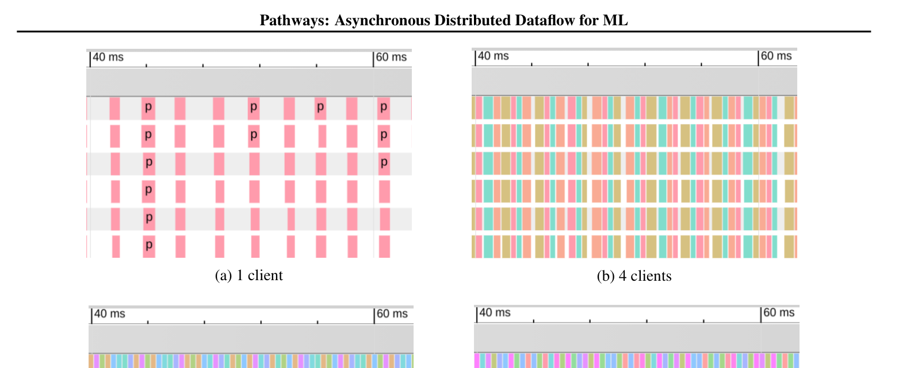
Figure 11: TPU-core traces with 1, 4, 8 and 16 concurrent clients. More clients fill otherwise idle gaps and approach full device utilization.
图 11：1、4、8、16 个并发客户端下的 TPU 核执行轨迹。更多客户端填补原本空闲的间隙，使设备利用率接近 100%。
ENFigure 12 traces several training steps of the 64B decoder-only Transformer under data parallelism across two 512-chip islands. Blue rows are one host in the first island and green rows one host in the second. Each island computes gradients, enqueues transfer to the other island, applies received gradients after DCN transfer, and starts the next step. Even across two groups of 128 hosts, DCN transfer adds little overhead: throughput is 97.2% of an equivalent-chip SPMD configuration using ICI.
中图 12 给出了 640 亿参数仅解码器 Transformer 跨两个各有 512 个芯片的加速器岛进行数据并行训练时，多个训练步骤的轨迹。前八行蓝色区域对应第一个岛中一台主机上的 TPU 计算，后八行绿色区域对应第二个岛中的一台主机。每个岛先计算梯度，再把梯度传输操作入队发往另一岛；DCN 梯度传输完成后，各岛应用收到的梯度并开始下一训练步。即使规模达到两组各 128 台主机，DCN 传输开销仍很小：与使用相同总芯片数并通过 ICI 通信的 SPMD 配置相比，训练吞吐量达到 97.2%。
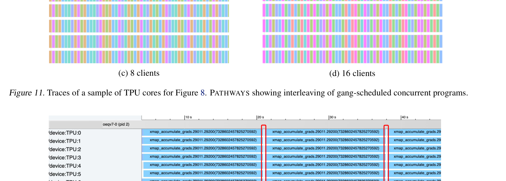
Figure 12: Data-parallel training trace for a 64B Transformer over two 512-TPU islands. The highlighted DCN exchange is small relative to step time.
图 12：640 亿参数 Transformer 跨两个 512-TPU 岛进行数据并行训练的执行轨迹。图中标出的 DCN 交换相对于每步总时间很小。
References / 参考文献（书目信息按原文保留）
Martı́n Abadi, Paul Barham, Jianmin Chen, Zhifeng Chen, Andy Davis, Jeffrey Dean, Matthieu Devin, Sanjay Ghemawat, Geoffrey Irving, Michael Isard, Manjunath Kudlur, Josh Levenberg, Rajat Monga, Sherry Moore, Derek G. Murray, Benoit Steiner, Paul Tucker, Vijay Vasudevan, Pete Warden, Martin Wicke, Yuan Yu, and Xiaoqiang Zheng. TensorFlow: A system for large-scale machine learning. In 12th USENIX Symposium on Operating Systems Design and Implementation (OSDI), Savannah, GA, November 2016. USENIX Association. Akshay Agrawal, Akshay Naresh Modi, Alexandre Passos, Allen Lavoie, Ashish Agarwal, Asim Shankar, Igor Ganichev, Josh Levenberg, Mingsheng Hong, Rajat Monga, et al. TensorFlow Eager: A multi-stage, Pythonembedded DSL for machine learning. arXiv preprint arXiv:1903.01855, 2019. Tyler Akidau, Alex Balikov, Kaya Bekiroğlu, Slava Chernyak, Josh Haberman, Reuven Lax, Sam McVeety, Daniel Mills, Paul Nordstrom, and Sam Whittle. MillWheel: Fault-tolerant stream processing at internet scale. Proc. VLDB Endow., 6(11):1033–1044, August 2013. Sebastian Angel, Hitesh Ballani, Thomas Karagiannis, Greg O’Shea, and Eno Thereska. End-to-end performance isolation through virtual datacenters. In 11th USENIX Symposium on Operating Systems Design and Implementation (OSDI), 2014. Rohan Anil, Vineet Gupta, Tomer Koren, Kevin Regan, and Yoram Singer. Scalable second order optimization for deep learning. arXiv preprint arXiv:2002.09018, 2021. Rachata Ausavarungnirun, Vance Miller, Joshua Landgraf, Saugata Ghose, Jayneel Gandhi, Adwait Jog, Christopher J Rossbach, and Onur Mutlu. Mask: Redesigning the GPU memory hierarchy to support multi-application concurrency. ACM SIGPLAN Notices, 53(2):503–518, 2018. Zhihao Bai, Zhen Zhang, Yibo Zhu, and Xin Jin. PipeSwitch: Fast pipelined context switching for deep learning applications. In 14th USENIX Symposium on Operating Systems Design and Implementation (OSDI). USENIX Association, November 2020. Paul Barham and Michael Isard. Machine learning systems are stuck in a rut. In Proceedings of the Workshop on Hot Topics in Operating Systems (HotOS), New York, NY, USA, 2019. Association for Computing Machinery. Andrew Baumann, Paul Barham, Pierre-Evariste Dagand, Tim Harris, Rebecca Isaacs, Simon Peter, Timothy Roscoe, Adrian Schüpbach, and Akhilesh Singhania. The multikernel: A new OS architecture for scalable multicore systems. In Proceedings of the ACM SIGOPS 22nd symposium on Operating systems principles, 2009. Rishi Bommasani and Drew A. Hudson et. al. On the opportunities and risks of foundation models. arXiv preprint arXiv:2108.07258, 2021. James Bradbury, Roy Frostig, Peter Hawkins, Matthew James Johnson, Chris Leary, Dougal Maclaurin, George Necula, Adam Paszke, Jake VanderPlas, Skye Wanderman-Milne, and Qiao Zhang. JAX: Composable transformations of Python+NumPy programs. http://github.com/google/jax, 2018. Tom Brown, Benjamin Mann, Nick Ryder, Melanie Subbiah, Jared D Kaplan, Prafulla Dhariwal, Arvind Neelakantan, Pranav Shyam, Girish Sastry, Amanda Askell, Sandhini Agarwal, Ariel Herbert-Voss, Gretchen Krueger, Tom Henighan, Rewon Child, Aditya Ramesh, Daniel Ziegler, Jeffrey Wu, Clemens Winter, Chris Hesse, Mark Chen, Eric Sigler, Mateusz Litwin, Scott Gray, Benjamin Chess, Jack Clark, Christopher Berner, Sam McCandlish, Alec Radford, Ilya Sutskever, and Dario Amodei. Language models are few-shot learners. In Advances in Neural Information Processing Systems, volume 33, 2020. Shubham Chaudhary, Ramachandran Ramjee, Muthian Sivathanu, Nipun Kwatra, and Srinidhi Viswanatha. Balancing efficiency and fairness in heterogeneous GPU clusters for deep learning. In Proceedings of the Fifteenth European Conference on Computer Systems (EuroSys). Association for Computing Machinery, 2020. Tianqi Chen, Thierry Moreau, Ziheng Jiang, Lianmin Zheng, Eddie Yan, Haichen Shen, Meghan Cowan, Leyuan Wang, Yuwei Hu, Luis Ceze, Carlos Guestrin, and Arvind Krishnamurthy. TVM: An automated end-to-end optimizing compiler for deep learning. In 13th USENIX Symposium on Operating Systems Design and Implementation (OSDI), Carlsbad, CA, October 2018. USENIX Association. Lyndon Clarke, Ian Glendinning, and Rolf Hempel. The MPI message passing interface standard. In Programming Environments for Massively Parallel Distributed Systems, 1994. Daniel Crankshaw, Xin Wang, Guilio Zhou, Michael J Franklin, Joseph E Gonzalez, and Ion Stoica. Clipper: A low-latency online prediction serving system. In 14th USENIX Symposium on Networked Systems Design and Implementation (NSDI), 2017. Jeff Dean. Introducing Pathways: A next-generation AI architecture. https://blog.google/techno logy/ai/introducing-pathways-next-ge neration-ai-architecture/, 2021. [Online; accessed October-2021]. Jacob Devlin, Ming-Wei Chang, Kenton Lee, and Kristina Toutanova. BERT: Pre-training of deep bidirectional transformers for language understanding. In Proceedings of the 2019 Conference of the North American Chapter of the Association for Computational Linguistics: Human Language Technologies, Volume 1 (Long and Short Papers), Minneapolis, Minnesota, June 2019. Association for Computational Linguistics. William Fedus, Barret Zoph, and Noam Shazeer. Switch Transformers: Scaling to trillion parameter models with simple and efficient sparsity. arXiv preprint arXiv:2101.03961, 2021. Dror G. Feitelson and Larry Rudolph. Gang scheduling performance benefits for fine-grain synchronization. Journal of Parallel and Distributed Computing, 16(4):306–318, 1992. Denis Foley and John Danskin. Ultra-performance Pascal GPU and NVLink interconnect. IEEE Micro, 37(2):7–17, March 2017. Google. Cloud TPU. https://cloud.google.com /tpu, 2021. [Online; accessed March-2021]. Vineet Gupta, Tomer Koren, and Yoram Singer. Shampoo: Preconditioned stochastic tensor optimization. In Jennifer Dy and Andreas Krause, editors, Proceedings of the 35th International Conference on Machine Learning, volume 80 of Proceedings of Machine Learning Research. PMLR, 10–15 Jul 2018. Vishakha Gupta, Karsten Schwan, Niraj Tolia, Vanish Talwar, and Parthasarathy Ranganathan. Pegasus: Coordinated scheduling for virtualized accelerator-based systems. In 2011 USENIX Annual Technical Conference (USENIX ATC), volume 31, 2011. Kaiming He, Xiangyu Zhang, Shaoqing Ren, and Jian Sun. Deep residual learning for image recognition. In 2016 IEEE Conference on Computer Vision and Pattern Recognition (CVPR), 2016. Jonathan Heek, Anselm Levskaya, Avital Oliver, Marvin Ritter, Bertrand Rondepierre, Andreas Steiner, and Marc van Zee. Flax: A neural network library and ecosystem for JAX. http://github.com/google/flax, 2020. Geoffrey E Hinton, Sara Sabour, and Nicholas Frosst. Matrix capsules with EM routing. In International conference on learning representations, 2018. Neil Houlsby, Andrei Giurgiu, Stanislaw Jastrzebski, Bruna Morrone, Quentin De Laroussilhe, Andrea Gesmundo, Mona Attariyan, and Sylvain Gelly. Parameter-efficient transfer learning for NLP. In International Conference on Machine Learning. PMLR, 2019. Yanping Huang, Youlong Cheng, Ankur Bapna, Orhan Firat, Dehao Chen, Mia Chen, HyoukJoong Lee, Jiquan Ngiam, Quoc V Le, Yonghui Wu, et al. GPipe: Efficient training of giant neural networks using pipeline parallelism. In Advances in neural information processing systems, 2019. Myeongjae Jeon, Shivaram Venkataraman, Junjie Qian, Amar Phanishayee, Wencong Xiao, and Fan Yang. Multitenant GPU clusters for deep learning workloads: Analysis and implications. Technical report, Microsoft Research, 2018. Myeongjae Jeon, Shivaram Venkataraman, Amar Phanishayee, Junjie Qian, Wencong Xiao, and Fan Yang. Analysis of large-scale multi-tenant GPU clusters for DNN training workloads. In 2019 USENIX Annual Technical Conference (USENIX ATC), Renton, WA, July 2019. USENIX Association. Zhihao Jia, Sina Lin, Mingyu Gao, Matei Zaharia, and Alex Aiken. Improving the accuracy, scalability, and performance of graph neural networks with Roc. Proceedings of Machine Learning and Systems, 2:187–198, 2020. Norman P. Jouppi, Doe Hyun Yoon, George Kurian, Sheng Li, Nishant Patil, James Laudon, Cliff Young, and David A. Patterson. A domain-specific supercomputer for training deep neural networks. Commun. ACM, 63(7): 67–78, 2020. David Kirk. NVIDIA CUDA software and GPU parallel computing architecture. In Proceedings of the 6th International Symposium on Memory Management (ISMM), New York, NY, USA, 2007. Association for Computing Machinery. Alex Krizhevsky, Ilya Sutskever, and Geoffrey E Hinton. ImageNet classification with deep convolutional neural networks. In Advances in Neural Information Processing Systems, volume 25. Curran Associates, Inc., 2012. Woosuk Kwon, Gyeong-In Yu, Eunji Jeong, and ByungGon Chun. Nimble: Lightweight and parallel GPU task scheduling for deep learning. In Advances in Neural Information Processing Systems, 2020. Jack Lanchantin, Arshdeep Sekhon, and Yanjun Qi. Neural message passing for multi-label classification. In Ulf Brefeld, Elisa Fromont, Andreas Hotho, Arno Knobbe, Marloes Maathuis, and Céline Robardet, editors, Machine Learning and Knowledge Discovery in Databases, Cham, 2020. Springer International Publishing. Chris Lattner, Mehdi Amini, Uday Bondhugula, Albert Cohen, Andy Davis, Jacques Pienaar, River Riddle, Tatiana Shpeisman, Nicolas Vasilache, and Oleksandr Zinenko. MLIR: Scaling compiler infrastructure for domain specific computation. In 2021 IEEE/ACM International Symposium on Code Generation and Optimization (CGO), 2021. Dmitry Lepikhin, HyoukJoong Lee, Yuanzhong Xu, Dehao Chen, Orhan Firat, Yanping Huang, Maxim Krikun, Noam Shazeer, and Zhifeng Chen. GShard: Scaling giant models with conditional computation and automatic sharding. arXiv preprint arXiv:2006.16668, 2020. Gangmuk Lim, Jeongseob Ahn, Wencong Xiao, Youngjin Kwon, and Myeongjae Jeon. Zico: Efficient GPU memory sharing for concurrent DNN training. In 2021 USENIX Annual Technical Conference (USENIX ATC). USENIX Association, July 2021. Jiaqi Ma, Zhe Zhao, Xinyang Yi, Jilin Chen, Lichan Hong, and Ed H Chi. Modeling task relationships in multi-task learning with multi-gate mixture-of-experts. In Proceedings of the 24th ACM SIGKDD International Conference on Knowledge Discovery & Data Mining, 2018. Kshiteej Mahajan, Arjun Balasubramanian, Arjun Singhvi, Shivaram Venkataraman, Aditya Akella, Amar Phanishayee, and Shuchi Chawla. Themis: Fair and efficient GPU cluster scheduling. In 17th USENIX Symposium on Networked Systems Design and Implementation (NSDI), 2020. Peter Mattson, Vijay Janapa Reddi, Christine Cheng, Cody Coleman, Greg Diamos, David Kanter, Paulius Micikevicius, David Patterson, Guenther Schmuelling, Hanlin Tang, Gu-Yeon Wei, and Carole-Jean Wu. MLPerf: An industry standard benchmark suite for machine learning performance. IEEE Micro, 40(2):8–16, 2020. Philipp Moritz, Robert Nishihara, Stephanie Wang, Alexey Tumanov, Richard Liaw, Eric Liang, Melih Elibol, Zongheng Yang, William Paul, Michael I. Jordan, and Ion Stoica. Ray: A distributed framework for emerging AI applications. In Proceedings of the 13th USENIX Conference on Operating Systems Design and Implementation (OSDI). USENIX Association, 2018. Derek Murray, Frank McSherry, Rebecca Isaacs, Michael Isard, Paul Barham, and Martin Abadi. Naiad: A timely dataflow system. In Proceedings of the 24th ACM Symposium on Operating Systems Principles (SOSP). ACM, November 2013. Deepak Narayanan, Aaron Harlap, Amar Phanishayee, Vivek Seshadri, Nikhil Devanur, Greg Granger, Phil Gibbons, and Matei Zaharia. PipeDream: Generalized pipeline parallelism for DNN training. In ACM Symposium on Operating Systems Principles (SOSP), October 2019. Deepak Narayanan, Keshav Santhanam, Fiodar Kazhamiaka, Amar Phanishayee, and Matei Zaharia. Heterogeneity-aware cluster scheduling policies for deep learning workloads. In 14th USENIX Symposium on Operating Systems Design and Implementation (OSDI), 2020. Deepak Narayanan, Mohammad Shoeybi, Jared Casper, Patrick LeGresley, Mostofa Patwary, Vijay Korthikanti, Dmitri Vainbrand, Prethvi Kashinkunti, Julie Bernauer, Bryan Catanzaro, Amar Phanishayee, and Matei Zaharia. Efficient large-scale language model training on GPU clusters using Megatron-LM. arXiv preprint arXiv:2104.04473, 2021. Maxim Naumov, John Kim, Dheevatsa Mudigere, Srinivas Sridharan, Xiaodong Wang, Whitney Zhao, Serhat Yilmaz, Changkyu Kim, Hector Yuen, Mustafa Ozdal, et al. Deep learning training in Facebook data centers: Design of scale-up and scale-out systems. arXiv preprint arXiv:2003.09518, 2020. NVIDIA. NVIDIA GPUDirect technology. http:// developer.download.nvidia.com/devzon e/devcenter/cuda/docs/GPUDirect Techn ology Overview.pdf, 2021. [Online; accessed February-2021]. Adam Paszke, Sam Gross, Francisco Massa, Adam Lerer, James Bradbury, Gregory Chanan, Trevor Killeen, Zeming Lin, Natalia Gimelshein, Luca Antiga, Alban Desmaison, Andreas Köpf, Edward Yang, Zach DeVito, Martin Raison, Alykhan Tejani, Sasank Chilamkurthy, Benoit Steiner, Lu Fang, Junjie Bai, and Soumith Chintala. PyTorch: An imperative style, high-performance deep learning library. In Advances in Neural Information Processing Systems, volume 32. Curran Associates, Inc., 2019. Hieu Pham, Melody Guan, Barret Zoph, Quoc Le, and Jeff Dean. Efficient neural architecture search via parameters sharing. In International Conference on Machine Learning. PMLR, 2018. Colin Raffel, Noam Shazeer, Adam Roberts, Katherine Lee, Sharan Narang, Michael Matena, Yanqi Zhou, Wei Li, and Peter J Liu. Exploring the limits of transfer learning with a unified text-to-text Transformer. arXiv preprint arXiv:1910.10683, 2019. Samyam Rajbhandari, Olatunji Ruwase, Jeff Rasley, Shaden Smith, and Yuxiong He. ZeRO-Infinity: Breaking the GPU memory wall for extreme scale deep learning. arXiv preprint arXiv:2104.07857, 2021. Jeff Rasley, Samyam Rajbhandari, Olatunji Ruwase, and Yuxiong He. DeepSpeed: System optimizations enable training deep learning models with over 100 billion parameters. In Proceedings of the 26th ACM SIGKDD International Conference on Knowledge Discovery & Data Mining (KDD), New York, NY, USA, 2020. Association for Computing Machinery. Xiaoqi Ren, Ganesh Ananthanarayanan, Adam Wierman, and Minlan Yu. Hopper: Decentralized speculation-aware cluster scheduling at scale. In Proceedings of the 2015 ACM Conference on Special Interest Group on Data Communication, 2015. Minsoo Rhu, Natalia Gimelshein, Jason Clemons, Arslan Zulfiqar, and Stephen W Keckler. vDNN: Virtualized deep neural networks for scalable, memory-efficient neural network design. In 2016 49th Annual IEEE/ACM International Symposium on Microarchitecture (MICRO). IEEE, 2016. Mohammad Shahrad and David Wentzlaff. Availability knob: Flexible user-defined availability in the cloud. In Proceedings of the Seventh ACM Symposium on Cloud Computing, 2016. Christopher J Shallue, Jaehoon Lee, Joseph Antognini, Jascha Sohl-Dickstein, Roy Frostig, and George E Dahl. Measuring the effects of data parallelism on neural network training. arXiv preprint arXiv:1811.03600, 2018. Noam Shazeer, Azalia Mirhoseini, Krzysztof Maziarz, Andy Davis, Quoc Le, Geoffrey Hinton, and Jeff Dean. Outrageously large neural networks: The sparsely-gated mixture-of-experts layer. In ICLR (Poster), 2017. Noam Shazeer, Youlong Cheng, Niki Parmar, Dustin Tran, Ashish Vaswani, Penporn Koanantakool, Peter Hawkins, HyoukJoong Lee, Mingsheng Hong, Cliff Young, et al. Mesh-TensorFlow: Deep learning for supercomputers. In Advances in Neural Information Processing Systems, 2018. Mohammad Shoeybi, Mostofa Patwary, Raul Puri, Patrick LeGresley, Jared Casper, and Bryan Catanzaro. Megatron-LM: Training multi-billion parameter language models using model parallelism. arXiv preprint arXiv:1909.08053, 2019. TensorFlow. XLA: Optimizing compiler for TensorFlow. https://www.tensorflow.org/xla, 2019. [Online; accessed September-2019]. TensorFlow. TensorFlow Datasets: A collection of ready-touse datasets. https://www.tensorflow.org/d atasets, 2021. [Online; accessed May-2021]. Nandita Vijaykumar, Kevin Hsieh, Gennady Pekhimenko, Samira Khan, Ashish Shrestha, Saugata Ghose, Adwait Jog, Phillip B Gibbons, and Onur Mutlu. Zorua: A holistic approach to resource virtualization in GPUs. In 2016 49th Annual IEEE/ACM International Symposium on Microarchitecture (MICRO). IEEE, 2016. Guanhua Wang, Kehan Wang, Kenan Jiang, Xiangjun Li, and Ion Stoica. Wavelet: Efficient DNN training with Tick-Tock scheduling. In Proceedings of Machine Learning and Systems, 2021. Qizhen Weng, Wencong Xiao, Yinghao Yu, Wei Wang, Cheng Wang, Jian He, Yong Li, Liping Zhang, Wei Lin, and Yu Ding. MLaaS in the wild: Workload analysis and scheduling in large-scale heterogeneous GPU clusters. In 19th USENIX Symposium on Networked Systems Design and Implementation (NSDI), Renton, WA, April 2022. USENIX Association. David Wentzlaff, Charles Gruenwald III, Nathan Beckmann, Kevin Modzelewski, Adam Belay, Lamia Youseff, Jason Miller, and Anant Agarwal. An operating system for multicore and clouds: Mechanisms and implementation. In Proceedings of the 1st ACM symposium on Cloud computing, 2010. Wencong Xiao, Romil Bhardwaj, Ramachandran Ramjee, Muthian Sivathanu, Nipun Kwatra, Zhenhua Han, Pratyush Patel, Xuan Peng, Hanyu Zhao, Quanlu Zhang, et al. Gandiva: Introspective cluster scheduling for deep learning. In 13th USENIX Symposium on Operating Systems Design and Implementation (OSDI), 2018. Wencong Xiao, Shiru Ren, Yong Li, Yang Zhang, Pengyang Hou, Zhi Li, Yihui Feng, Wei Lin, and Yangqing Jia. Antman: Dynamic scaling on GPU clusters for deep learning. In 14th USENIX Symposium on Operating Systems Design and Implementation (OSDI). USENIX Association, November 2020. Bowen Yang, Jian Zhang, Jonathan Li, Christopher Ré, Christopher Aberger, and Christopher De Sa. Pipemare: Asynchronous pipeline parallel DNN training. In Proceedings of Machine Learning and Systems, 2021. Yang You, Igor Gitman, and Boris Ginsburg. Large batch training of convolutional networks. arXiv preprint arXiv:1708.03888, August 2017. Hangchen Yu, Arthur Michener Peters, Amogh Akshintala, and Christopher J Rossbach. AvA: Accelerated virtualization of accelerators. In Proceedings of the Twenty-Fifth International Conference on Architectural Support for Programming Languages and Operating Systems, 2020. Peifeng Yu and Mosharaf Chowdhury. Fine-grained GPU sharing primitives for deep learning applications. Proceedings of Machine Learning and Systems, 2:98–111, 2020. Yuan Yu, Martin Abadi, Paul Barham, Eugene Brevdo, Mike Burrows, Andy Davis, Jeff Dean, Sanjay Ghemawat, Tim Harley, Peter Hawkins, Michael Isard, Manjunath Kudlur, Rajat Monga, Derek Murray, and Xiaoqiang Zheng. Dynamic control flow in large-scale machine learning. In Proceedings of EuroSys 2018, 2018. Biao Zhang, Ankur Bapna, Rico Sennrich, and Orhan Firat. Share or not? learning to schedule language-specific capacity for multilingual translation. In International Conference on Learning Representations, 2021. Shixiong Zhao, Fanxin Li, Xusheng Chen, Xiuxian Guan, Jianyu Jiang, Dong Huang, Yuhao Qing, Sen Wang, Peng Wang, Gong Zhang, Cheng Li, Ping Luo, and Heming Cui. vPipe: A virtualized acceleration system for achieving efficient and scalable pipeline parallel DNN training. IEEE Transactions on Parallel and Distributed Systems, 33(3), 2022. Zhe Zhao, Lichan Hong, Li Wei, Jilin Chen, Aniruddh Nath, Shawn Andrews, Aditee Kumthekar, Maheswaran Sathiamoorthy, Xinyang Yi, and Ed Chi. Recommending what video to watch next: A multitask ranking system. In Proceedings of the 13th ACM Conference on Recommender Systems, 2019.